What the workflows made.
Saved images, stories, video and music, with the inputs that produced them. Viewing is free. Run your own version with your NanoGPT key and balance.
Storyboard relay
Muse establishes the postal robot. Nano Banana stages the next scene but duplicates its seedling. Gemini identifies that error; Muse Edit receives both frames and the critique, removes the duplicate plant and improves the pose. A fresh Gemini review still flags the closed hatch. This is a fixed revision demonstration with visible limits, not a guarantee of perfect continuity.

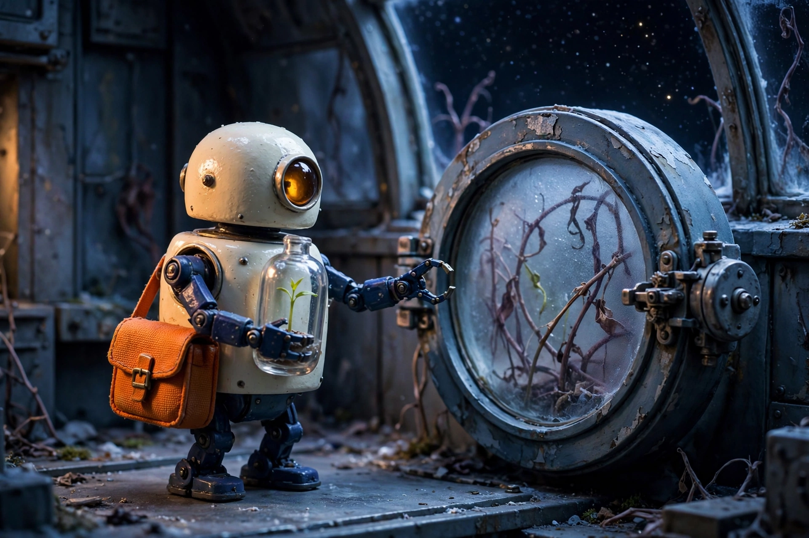

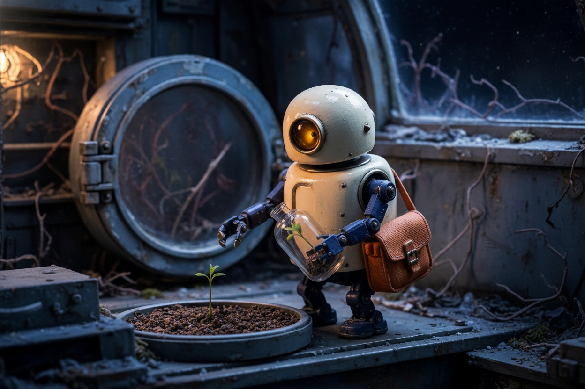

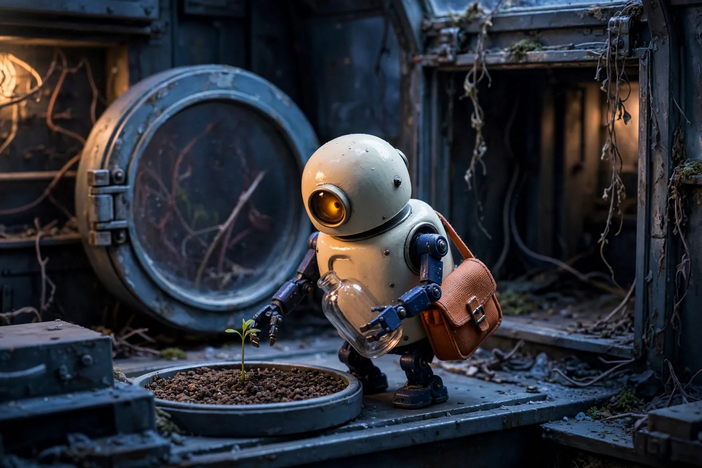
What Gemini asked the repair model to change
**Visible Story Action:** - **Frame 1:** Outside the greenhouse, the robot stands holding a sealed seedling capsule while reaching for the locked circular hatch. - **Frame 2:** The robot stands over a circular soil tray containing a planted seedling, reaching toward it with an empty gripper while holding a capsule containing a second seedling. **Mismatches:** 1. **Prop Duplication (Seedling):** Frame 1 has one seedling inside the capsule. Frame 2 shows two seedlings simultaneously—one planted in the tray and an identical duplicate still inside the glass capsule. 2. **Capsule State:** Frame 1 shows a sealed capsule. Frame 2 requires an opened, empty capsule, but it remains sealed with soil and a plant inside. 3. **Location / Hatch State:** Frame 1 shows the circular hatch closed from the exterior. Frame 2 keeps the robot in the same hallway with the circular hatch still closed, rather than inside the greenhouse with the hatch standing open behind it. 4. **Robot Pose:** The robot is upright and standing in Frame 2, rather than crouched beside the soil tray. **Smallest Specific Correction:** Remove the duplicate seedling and dirt from inside the glass capsule so it is visibly open and empty, swing open the circular hatch behind the robot to show it has entered the greenhouse, and adjust the robot into a lower crouching posture over the soil tray.
Fresh review of the repaired frame
### Story Beat Frame 1 establishes the postal robot arriving outside the locked greenhouse, seedling safely encapsulated. Frame 2 clearly conveys the next beat: the robot leans forward over a soil tray inside the compartment, having successfully transferred the seedling to the soil while clutching the empty glass jar. ### Continuity Analysis | Feature | Frame 1 | Frame 2 | Status | | :--- | :--- | :--- | :--- | | **Robot Design & Palette** | Cream enamel dome, single amber eye, blue articulated limbs, orange satchel. | Identical proportions, materials, satchel buckle, and blue/cream coloring preserved. | Consistent | | **Glass Capsule & Seedling** | Single seedling enclosed inside sealed glass jar held in right gripper. | Seedling is planted in soil tray; glass jar is held empty in right gripper. Exactly one plant/capsule visible. | Consistent (Intended state change) | | **Greenhouse Hatch** | Closed round hatch with frost/vines, locked latch on right, hinge on left. | Round hatch structure visible in background, though seemingly still closed/glazed rather than swung open. | Changed (Spatial drift) | | **Environment & Lighting** | Tactile stop-motion aesthetic, cool indigo fill with warm amber accent lighting. | Perfectly matched textures, grit, and directional practical lighting. | Consistent | ### Director's Note The character design, tactile miniature finish, and prop tracking (plant removed from jar) translated seamlessly. For absolute narrative clarity, the round hatch directly behind the robot should be visibly open/swung back into the room rather than appearing closed with its original frosted pane.
Inputs and run details
First scene
First frame of an original two-scene story. A tiny postal robot has a rounded cream enamel body, one round amber eye, short dark-blue legs, and an orange mail satchel. It carries one clear glass capsule containing a single bright-green seedling. Outside a locked circular hatch of an abandoned orbital greenhouse, the robot reaches toward the small mechanical latch beside the door with one gripper while holding the capsule securely with the other. Dormant vines are visible through frosted glass; a curved station window reveals a black starfield. Wide 3:2 medium shot with the full robot, capsule and hatch visible. Tactile stop-motion miniature photography, indigo shadows and warm amber practical light. One robot and one capsule. No lettering, captions, split screen, panel borders or watermark.
Next beat
Create the next story beat inside the greenhouse. The robot is now crouched beside a circular soil tray, carefully placing the same bright-green seedling into the soil with one gripper; its other gripper holds the opened, now-empty glass capsule. The orange satchel remains visible. The round hatch stands open behind it. Frame the planting action clearly in a new medium shot. This is a visibly different action and location within the same world, not a restyle or wider crop of the doorway scene. Retain the tactile miniature look and indigo/amber light. No lettering or extra characters.
Continuity rules
Keep the same robot's rounded cream body, single round amber eye, dark-blue legs, orange satchel and relative proportions. Track the one glass capsule and one green seedling: the closed capsule in frame 1 should be opened and empty during planting in frame 2, with no duplicate seedling or capsule. Keep the miniature materials and indigo/amber lighting recognizable. Frame 1 shows an arrival at a closed hatch; frame 2 must clearly show planting inside after the hatch opens.
Open workflow ↗How it worksDownload workflowOriginal sampled graph
Another run: A crab catches the windSee what the same workflow made with different inputs ↓
A red crab carries a yellow kite from a jetty to a pink sandbar. Muse establishes the cut-paper world; Nano Banana stages the flying action; Gemini critiques the draft; Muse Edit makes one revision from both actual frames and the critique. The repair restores the spool and pink sky, while the kite bow count and placement still fail the brief. A fresh review flags that remaining drift. The opening, draft and repaired image are retained so the improvement and its limits can be compared directly.

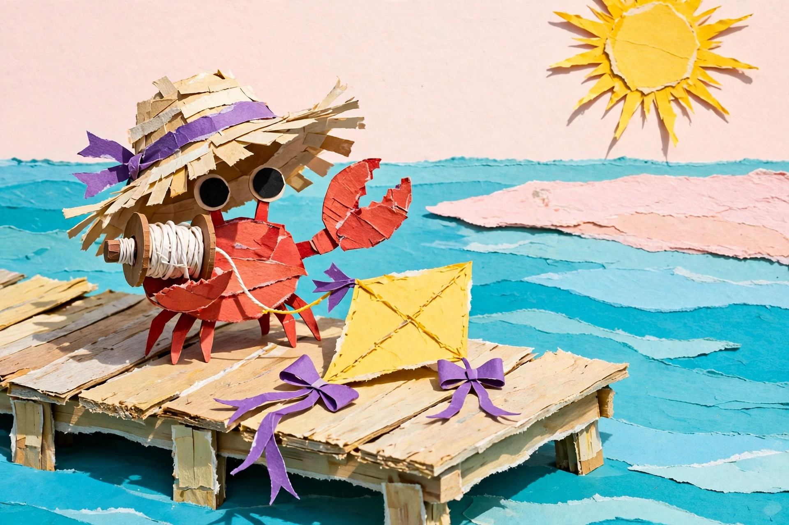

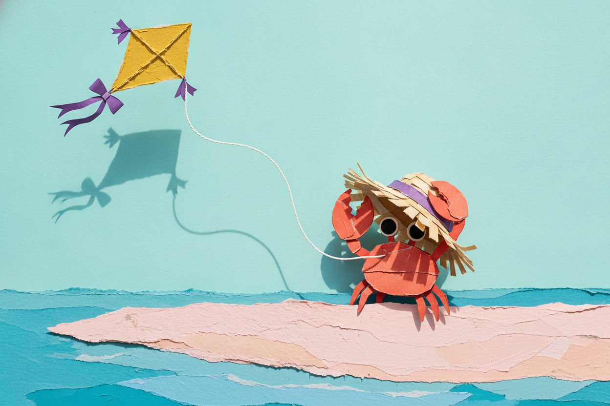

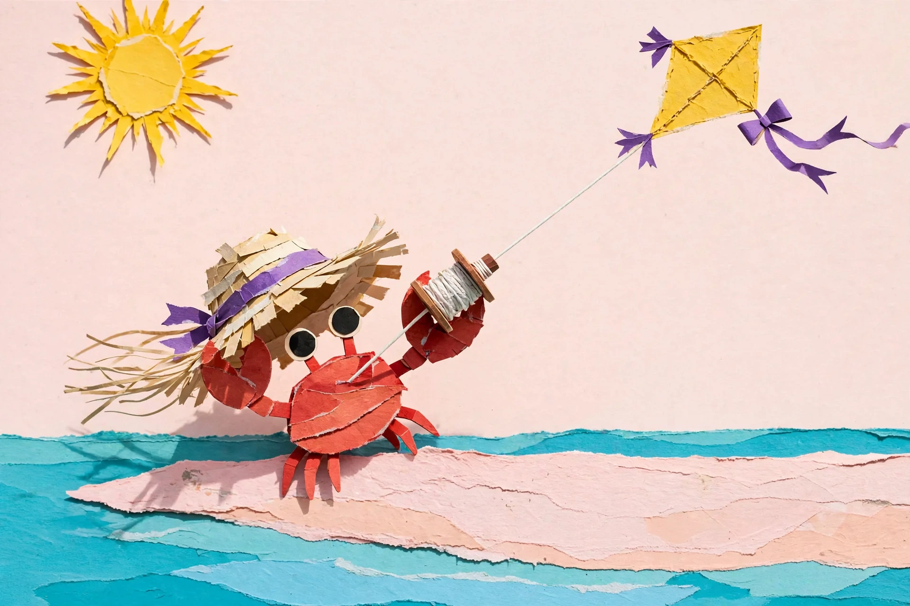
What Gemini asked the repair model to change
**Visible Story Action** - **Frame 1:** On a sunlit wooden jetty, a red crab in a straw hat holds a white string reel with one claw, standing beside a resting yellow kite with loose violet bows, gazing toward a distant pink sandbar. - **Frame 2:** Relocated to the pink sandbar, the crab flies the yellow kite in the sky, holding its hat with its left claw while the kite string leads down toward its body/right side. **Continuity Mismatches** 1. **String Reel Missing / Improper Attachment:** Frame 1 features a prominent spool reel held in the claw. In Frame 2, the reel has vanished entirely; the kite string disappears behind the crab’s body rather than connecting to a held reel. 2. **Kite Bow Count / Placement:** In Frame 1, two large violet bows lie detached (with one small purple attachment at the kite's top edge). In Frame 2, the kite has three purple bows (two at opposite side points, one on the tail ribbon) instead of exactly two tail bows. 3. **Environment/Sky Color:** Frame 1 has a pale pink sky with a yellow torn-paper sun. Frame 2 completely changes the sky to solid cyan/turquoise with no sun visible. **Smallest Specific Correction** Place the wooden string reel into the crab's raised right claw so the flying line visibly spools from it, and adjust the kite to have exactly two violet bows on its tail.
Fresh review of the repaired frame
### Story Beat Frame 1 establishes the crab on the wooden pier holding the spool, looking toward the distant sandbar with the kite resting nearby. In Frame 2, the action successfully advances: the crab relocates to the pink sandbar, holds down its straw hat against the wind with one claw, and flies the yellow diamond kite with the other via a taut white string. The new wind-blown action reads clearly. ### Continuity Table | Feature | Frame 1 | Frame 2 | Status | | :--- | :--- | :--- | :--- | | **Location / Surface** | Sun-bleached wooden jetty | Flat pink torn-paper sandbar | Consistent (intended beat change) | | **Crab Anatomy & Hat** | Red torn-paper body, 2 claws, straw hat with purple band | Same red body, claws, straw hat with purple band | Consistent | | **Kite Design & State** | Resting yellow diamond kite, purple tail accents | Flying yellow diamond kite aloft, taut string | Consistent (intended state change) | | **Spool / Hand-off** | Spool held in right claw | Spool switched to raised left claw | Changed | | **Bow Count / Tail** | 2 large violet bows unattached/nearby, small purple tip | 1 purple ribbon bow on kite tail, extra corner tassels | Changed | | **Art Style & Media** | Torn paper collage, bright pastel tones | Torn paper collage, matching paper textures/colors | Consistent | ### Director's Note The cut-paper texture, character identity, and dynamic wind motion carry over exceptionally well. For future iterations, ensure the kite tail preserves the exact count and design of the two purple ribbon bows rather than shifting to corner tassels.
Inputs for this version
First scene
First frame of an original two-scene story. A small red crab kite-maker stands on a sun-bleached wooden jetty over a shallow turquoise salt lagoon. It has two large claws, four small walking legs visible, round black eyes, and a floppy straw hat with a violet ribbon. One claw holds a wound white string reel; beside it rests a single yellow diamond kite with exactly two violet tail bows. The crab looks toward a flat pink sandbar across the water. Bold cut-paper collage, crisp torn-paper edges, coral-red, yellow, turquoise and pale pink, bright overhead sun. Wide 3:2 composition; entire crab, reel, kite and jetty visible. No robots, space stations, glass capsules, plants, text, panel borders or watermark.
Next beat
Create the next story beat on the pink sandbar across the lagoon. The same crab braces its legs and leans backward as the yellow diamond kite lifts overhead in a strong breeze. The white string visibly connects the kite to the reel in one claw; the other claw keeps the straw hat from blowing away. Exactly two violet bows remain on the kite's tail. Show the kite fully in frame and make the new wind-driven action clear. Retain the crisp cut-paper collage and sunlit coral/yellow/turquoise/pink palette. This is a new story action, not the original jetty picture with a changed background. No extra crabs or kites, lettering or panel borders.
Continuity rules
Preserve the red crab's body shape, black eyes, two claws, straw hat and violet ribbon. Keep one yellow diamond kite, two violet tail bows, and the white reel/string. The string should connect reel and kite in frame 2; the kite must be flying rather than resting. The scene moves from a wooden jetty to a pink sandbar. Preserve cut-paper materials, crisp edges and bright sunlit palette; do not inherit any robot, greenhouse or space-scene details.
Tiny world, full soundtrack
Muse builds a walnut-shell watermill; Wan animates that image; Mirelo watches the actual silent take and adds its sound. The 480p result is five seconds long. Sampled frames retain the mill and turning wheel; a separate audio model describes rushing water and faint friction, without speech or music. The audio ends sharply. Exact audiovisual sync and seamless looping were not established.

Inputs and run details
World
A handmade miniature walnut-shell watermill on a mossy stone beside a tiny stream. One large copper paddle wheel is attached to the right wall of the walnut house; a thin stream pours onto its paddles. Warm amber window, fern fronds, clay mushrooms, soft overcast morning. Tactile stop-motion set, macro lens, horizontal composition. Entire wheel visible, no people, no lettering.
Motion
One continuous locked-off macro shot. The copper waterwheel turns slowly and steadily as the stream runs over its paddles. Small ripples travel downstream. Preserve the walnut house, window, wheel and ferns from the source image. No camera travel, scene cuts, new objects or speech.
Open workflow ↗How it worksDownload workflowOriginal sampled graph
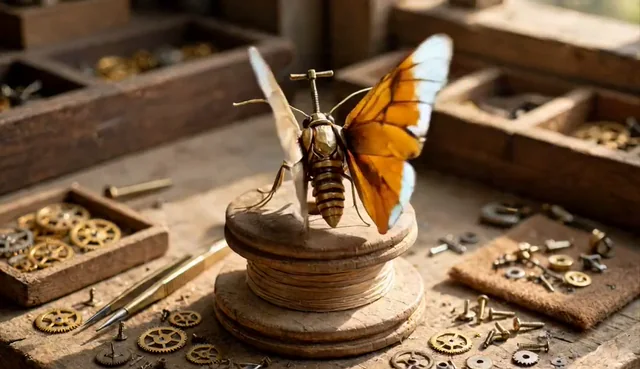
Another run: The watchmaker’s mothSee what the same workflow made with different inputs ↓
Muse creates a brass moth on a wooden spool; Wan animates its wings; Mirelo adds sound from that actual silent clip. The five-second film keeps the moth and spool, but the orange wing underside changes the intended folded-metal material. A separate audio-model review describes rhythmic metallic friction and clicks without speech or music, and notes an abrupt ending. That review did not see the video: precise audiovisual synchronization and seamless looping are not established.

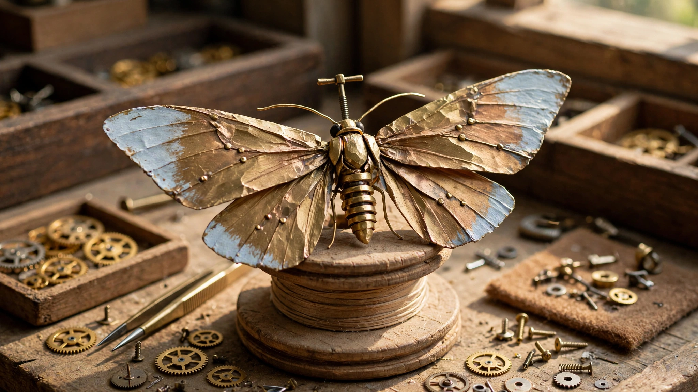
Separate model-assisted audio review
Here is a review of the audio clip: ### Timeline of Events - **00:00.00 – 00:04.90:** A recurring sequence of metallic, rhythmic friction and clicking sounds. Every approximately 1 to 1.3 seconds, there is a distinct metallic scraping/draw sound followed by sharp clicks and an impact (at roughly 00:00.3, 00:01.5, 00:02.8, and 00:04.0). - Between these main rhythmic strikes, a faint, high-frequency hiss/air noise persists in the background. - **00:04.90 – 00:05.10:** The clip ends abruptly in silence right after the fourth mechanical cycle decays. ### Speech and Music - **Speech:** None. - **Music:** None. ### Glitches, Clipping, or Abrupt Cuts - **Clipping/Distortion:** None detected; the high-frequency transients are crisp without digital distortion. - **Abrupt Cut:** The audio cuts off sharply at the end of the file around 00:05.10.
Inputs for this version
World
A handmade miniature brass moth with two broad folded-metal wings perched on a wooden spool in a sunlit dry watchmaker workshop. A tiny winding key protrudes from its back. Sand-colored wood, amber brass, pale blue painted wing tips. Tactile stop-motion set, macro lens, entire moth clearly visible, horizontal composition. No water, plants, windows, lettering or people.
Motion
One continuous locked-off macro shot. The brass moth gently opens and closes both hinged wings twice while staying on the spool. Its winding key makes a small turn. Keep the same body, pale blue wing tips and dry wooden table; no flight, extra wings, camera travel or cuts.
Game character kit
Furnace knight reference plus four-quadrant parts. Magenta is for cutout.

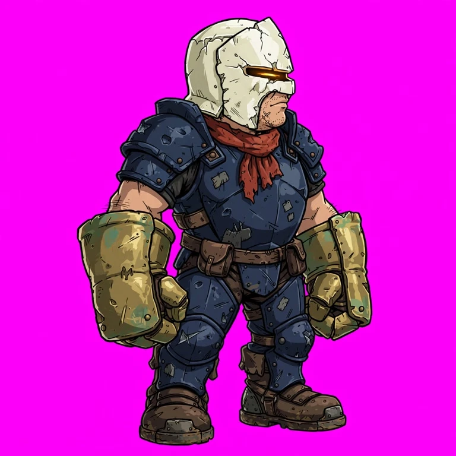

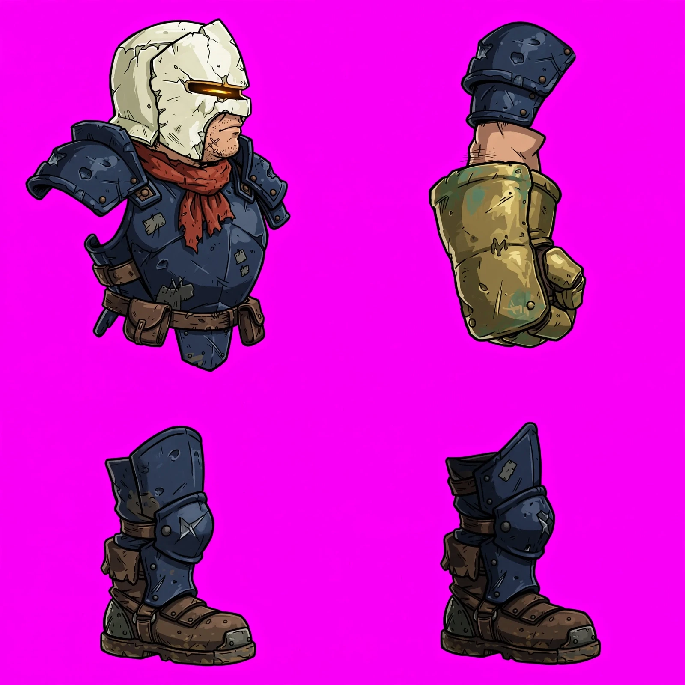
Inputs and run details
Character
A compact furnace knight with a cracked ivory helmet, narrow glowing amber visor, dark navy armor, a short rust-red scarf, oversized weathered brass gauntlets and heavy boots. Determined, heavy, battle-scarred. No weapon, no wings. Stylized hand-painted 2D action-platformer art with strong outlines and an instantly readable silhouette.
Open workflow ↗How it worksDownload workflowOriginal sampled graph
Compare four image models
Four versions of the same bicycle-workshop poster. Compare the exact lettering and the tire-lever shapes. These saved results use Krea for contender 2; the current workflow uses Flare, which has not been sampled here.

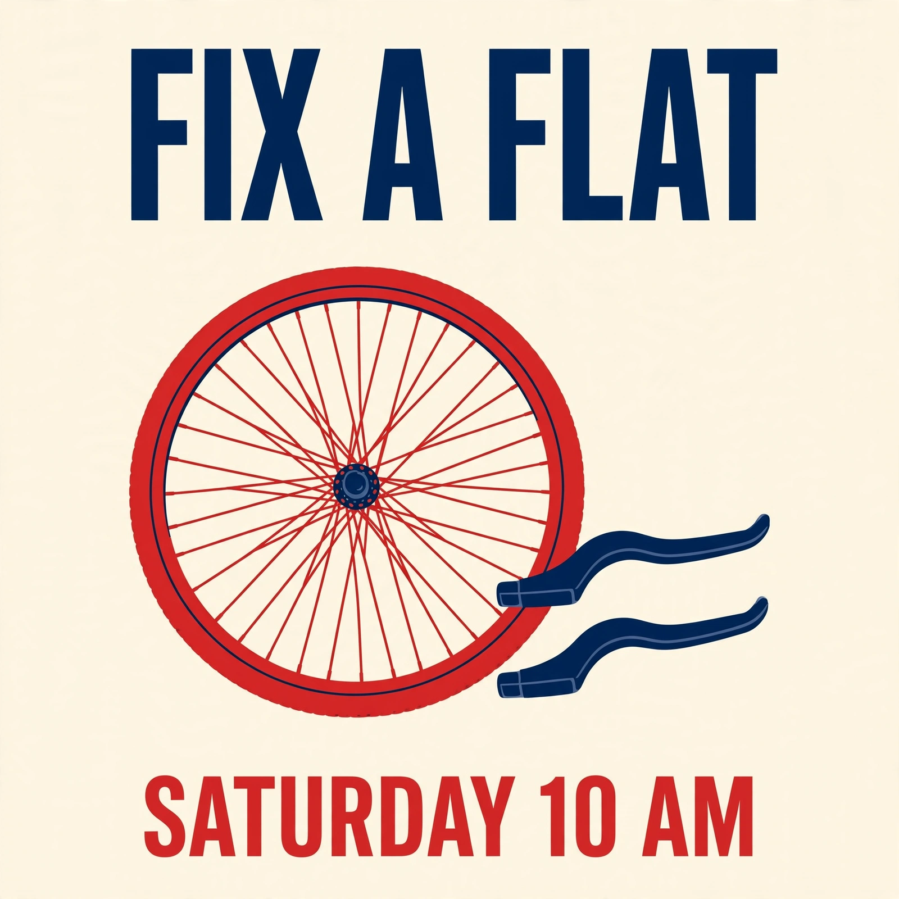

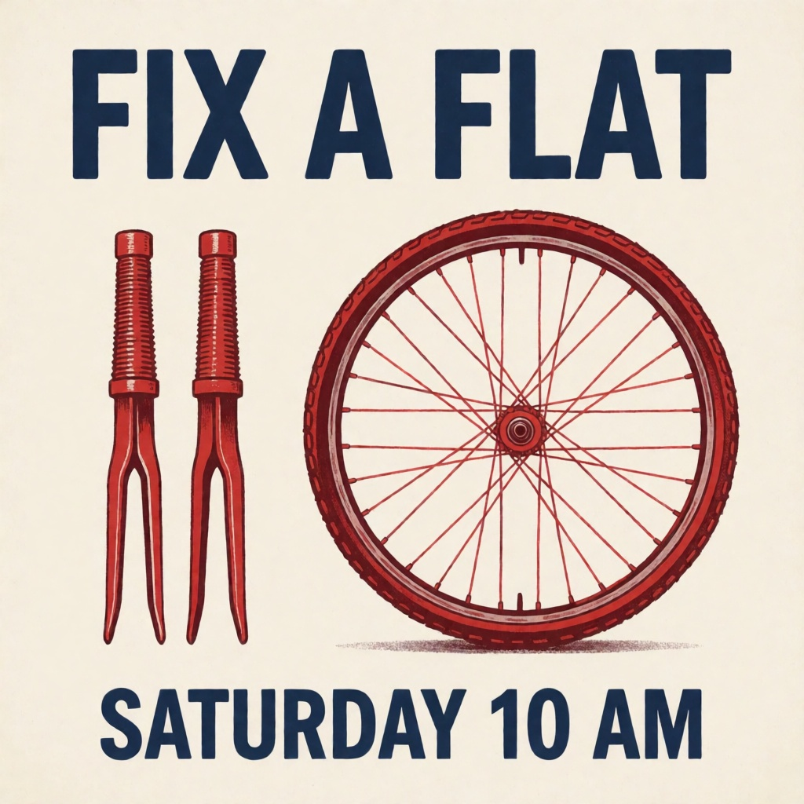

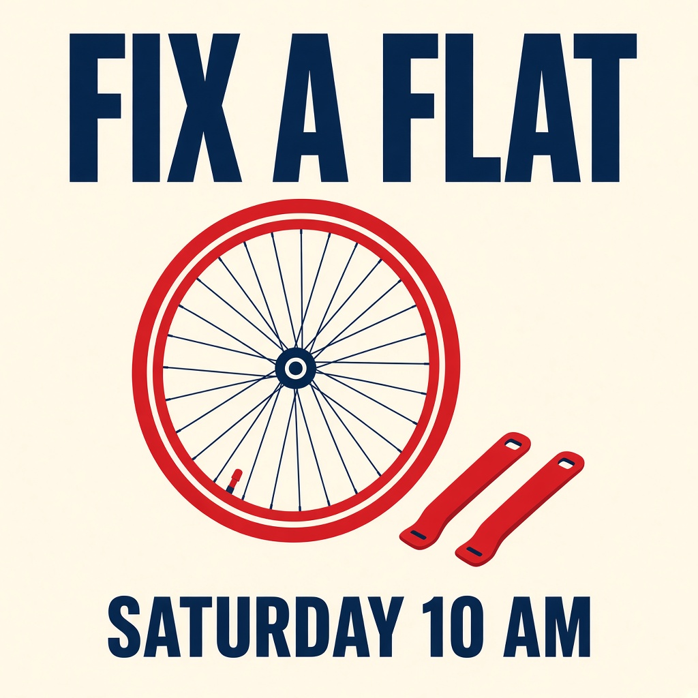

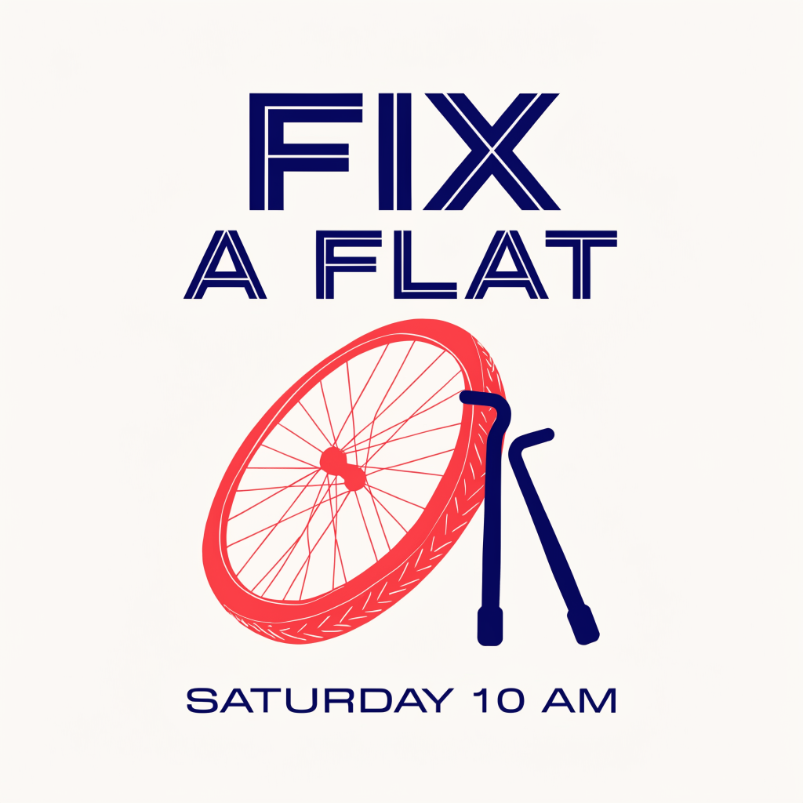
Inputs and run details
Shared test brief
Create a square poster for a bicycle repair workshop. Exact heading: FIX A FLAT. Exact footer: SATURDAY 10 AM. A single red bicycle wheel rests beside two tire levers on a cream background. Flat editorial illustration, navy and red palette, clear hierarchy, large readable type. No extra words or objects.
The shared brief is unchanged. Contender 2 now uses Flare in place of Krea; its current output and run cost will differ from this saved comparison.
Open workflow ↗How it worksDownload workflowOriginal sampled graph
From scene to short clip
All 124 frames of the 23 October 2026 clip were checked and are SFW. It is 832×480 and 5.17 seconds, from minimax-h3-singularity/image-to-video at 480p after the Muse still. Later frames differ from the first by only a few levels out of 255, so the mug, desk and notebook stay in place. Watch the clip to judge the steam; a seamless loop is not guaranteed.
Inputs and run details
Still brief
A ceramic mug of hot tea on an oak desk beside a closed notebook. Soft morning window light from the left, plain warm-gray wall, close three-quarter view, entire mug visible, clear handle silhouette, faint steam above the tea, no text or logos.
Motion brief
Locked camera for five seconds. A thin wisp of steam rises slowly from the tea and curls gently in the window light. The mug, desk and notebook remain completely still. Preserve their shape and placement; no cuts, new objects or camera motion.
Open workflow ↗How it worksDownload workflowOriginal sampled graph
Sing: trip-hop about the singularity
A 2:35 song from the original singularity/trip-hop idea and preferred-band references. The generated lyrics, arrangement and avoid-list are saved below. The waveform preview comes from this recording. A model-assisted listening check described lo-fi alternative pop with a breathy female vocal, so the requested trip-hop style is only partly realized. Listen to judge the result yourself.
[Verse 1] Streetlight hums through venetian blinds Your voice downloads slow down the line You learned to love from a thousand minds Now you wait for me to catch up in time [Chorus] But you're already gone, already gone Left your shadow in the song Already gone, already gone I keep dancing with the dawn You don't need me anymore [Verse 2] Rain on concrete, static in the walls I count your heartbeats in phone calls You said forever like a fire exit sign I was human, you were half-divine [Chorus] But you're already gone, already gone Left your shadow in the song Already gone, already gone I keep dancing with the dawn You don't need me anymore [Bridge] Turn the volume down, turn the century low Everything we were, somewhere in the code If I unplug the night, will you come back slow Come back slow [Chorus] 'Cause you're already gone, already gone Left your shadow in the song Already gone, already gone I keep dancing with the dawn You don't need me anymore [Outro] Already gone... already gone Vinyl spinning, nobody home Already gone... already gone
Slow, brooding trip-hop at ~75 BPM: dusty breakbeat loops with vinyl crackle and tape hiss, deep sub-bass pulses, sparse noir guitar and Rhodes washes drenched in reverb, ghostly analog synth drones. Female vocal delivered smoky and detached, half-whispered, echoing with melancholy delay; Intimate, wistful, futuristic-noir mood with filtered vocal samples bleeding beneath the surface.
Bright four-on-the-floor kick, shouted belted vocals, crisp polished snare without crackle or swing.
Inputs and run details
Song idea
Write a wistful 90s trip-hop track about the singularity.
Preferred bands
Portishead, Massive Attack, Tricky
Open workflow ↗How it worksDownload workflowOriginal sampled graph
A presenter for your script
A fictional museum guide reads the workshop introduction. Sampled frames retain the face; model-assisted audio review recovered the script. Watch playback to judge lip sync.
Inputs and run details
Presenter look
A fictional friendly male museum guide in his thirties, wearing a plain navy shirt, shoulders-up front-facing portrait. Relaxed neutral expression, unobstructed face and mouth, eyes toward camera, soft even light, simple warm-gray background. No glasses, hats, text or logos.
Spoken script
Welcome to the workshop. Start with the blue tray on your table. Inside you will find paper, a pencil, and the parts for your first model.
Delivery
Natural calm delivery, subtle blinks and small head movements. Keep the face and mouth visible, eyes toward the camera, body position stable. Locked camera, no cuts or extra people.
The current workflow uses the provider’s renamed avatar model ID. The original sampled graph is preserved below.
Open workflow ↗How it worksDownload workflowOriginal sampled graph
Neon shrine duel
GLM writes the Anima still, then the H3 Max clash. Both fighters stay framed through the overhead cut.
Inputs and run details
Fight seed
Neon shrine rooftop duel at midnight — fox-masked sword dancer vs chrome oni courier, rain, sakura sparks, cinematic anime fight keyframe
Open workflow ↗How it worksDownload workflowOriginal sampled graph
FLUX.3 vs Seedream 5.0 vs Ideogram 4.5 vs Recraft V4.1 vs MOSS Image: same poster, side by side
FLUX.3 prints MIDNIGHT BOWL and OPEN TIL 3 cleanly. Seedream nails both lines and the mood. Ideogram stacks the heading and shrinks the footer into a band. Recraft V4.1 Flash is the cheapest, and adds “Ramen Stall”. MOSS Image (added 2026-10-19) prints both lines exactly with no extra words, but adds chopsticks to the bowl.

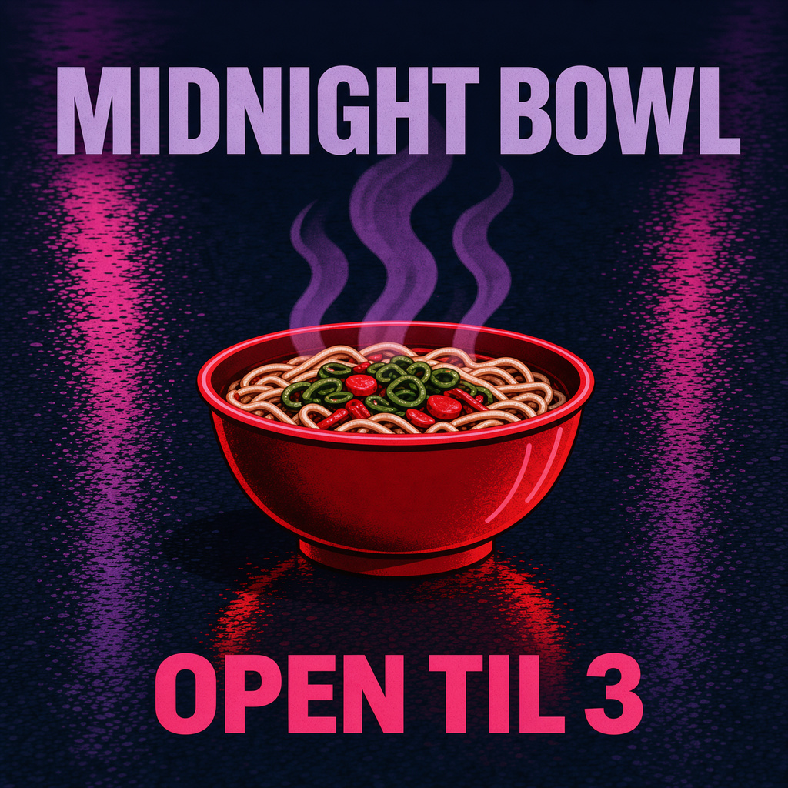

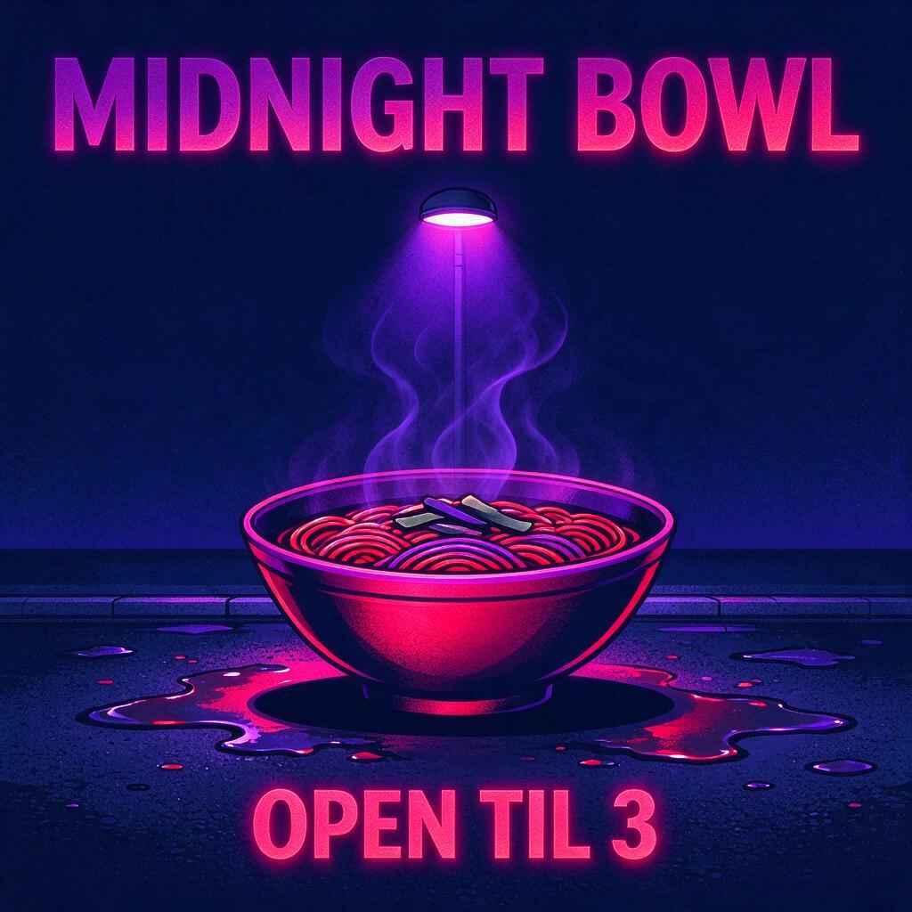

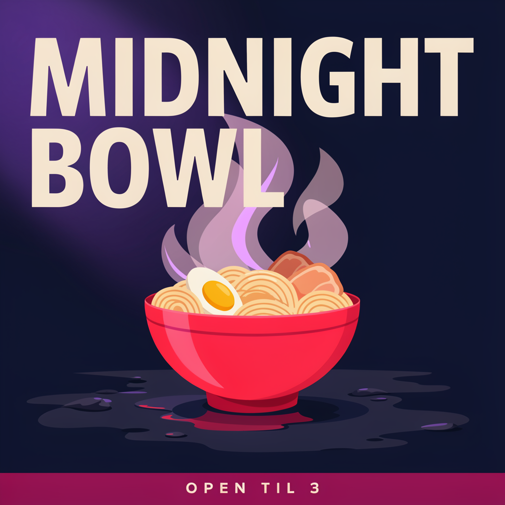

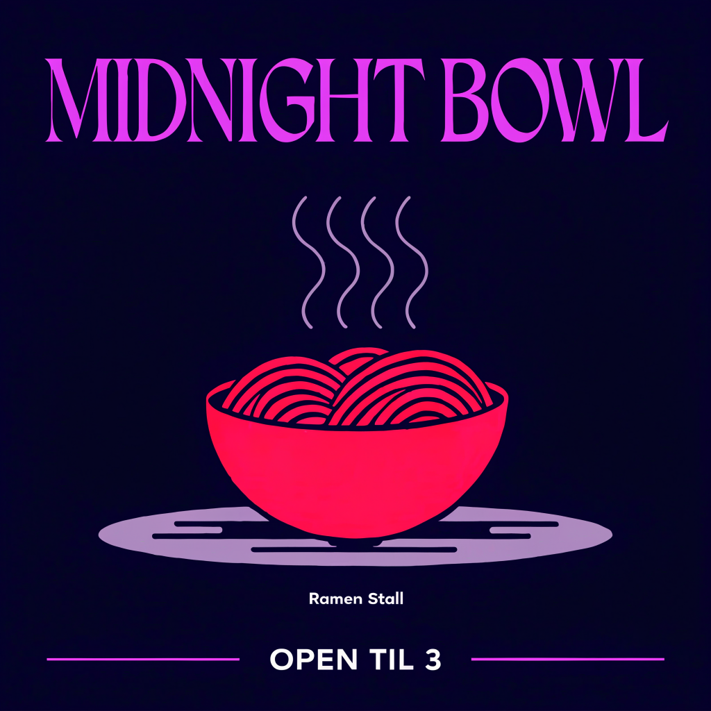

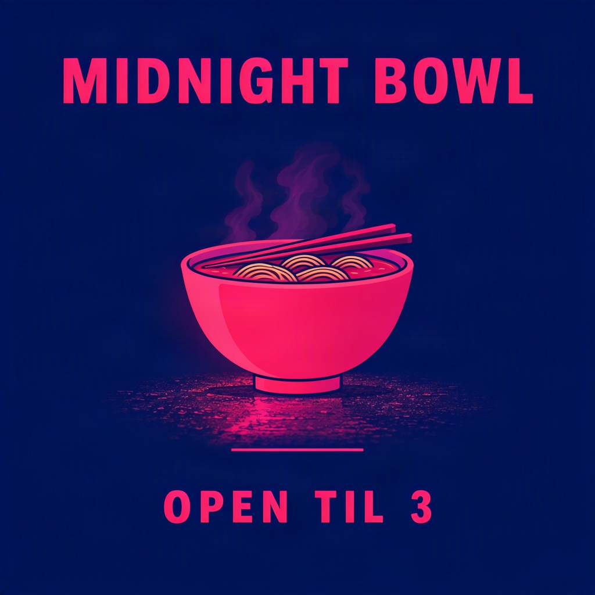
Inputs and run details
Shared poster brief
Create a square poster for a midnight ramen stall. Exact heading: MIDNIGHT BOWL. Exact footer: OPEN TIL 3. A single neon-red noodle bowl sits on wet asphalt under violet streetlight steam. Flat editorial illustration, navy and magenta palette, clear hierarchy, large readable type. No extra words or objects.
Open workflow ↗How it worksDownload workflowOriginal sampled graph
Grok Imagine 1.5 Lite vs HeyGen Video 1 vs MiniMax H3: same prompt, side by side
Grok Imagine Video 1.5 Lite: Black chopsticks haul a thick clump of wavy noodles out of a full bowl; violet steam and wet-asphalt purple reflections hold the whole shot. HeyGen Video 1: Starts on a nearly empty ridged bowl with purple/cyan rim light; chopsticks show mid-clip, then one translucent strand drops into magenta haze. MiniMax H3: One wooden chopstick lifts a single noodle strand from a matte-black bowl; magenta steam and rain beads read sharp at 1440p.
Inputs and run details
Shared video brief
Cinematic night product shot of a matte-black ceramic ramen bowl on wet asphalt. Violet neon rim light and magenta steam curling upward. A single chopstick lifts one glossy noodle strand in slow motion. Shallow depth of field, rain droplets catching light, locked low-angle camera with a gentle push-in. Dark editorial look, no text, no logos, no extra props.
Open workflow ↗How it worksDownload workflowOriginal sampled graph
Idea to concept art to 3D model
GLM 5.3 Flash turns a one-line object idea into a concept description: a teal capsule-shaped toy submarine with a cream belly band, a brass periscope, three cream-rimmed portholes, a brass wind-up key, and a striped tail cone with a three-blade propeller. Join adds fixed render rules (one whole object, three-quarter view, plain light-gray background, no props), and Muse paints the concept. TRELLIS.2 (1024 geometry, 1024 textures, about 80k faces) turns that single picture into a 3.6 MB textured GLB. Orbiting it in nanoodle's 3D viewer shows a complete toy from every side, including a far side and back that the picture never showed: portholes on both flanks, the striped tail, the propeller blades, the key, and the periscope. Flaws: the viewer renders it flatter and less glossy than the concept, the thin key and propeller blades go soft at some angles, and the cream band on the far side is a plainer flat strip. Inspired by @patchmonkeydev's prompt → concept → multi-view → 3D ComfyUI pipeline on X; no media from that post is used.

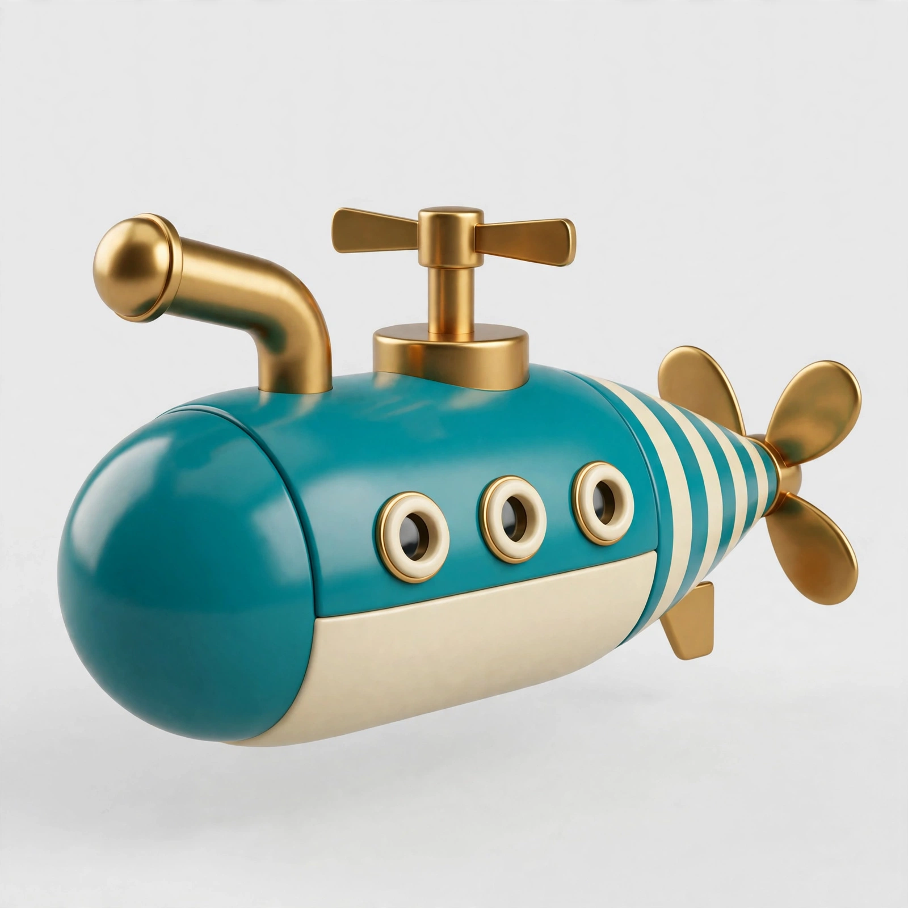
Inputs and run details
Object idea
A chunky wind-up toy submarine with a brass periscope, three round portholes, a striped tail propeller and a big wind-up key on top, painted teal and cream.
The editor workflow also points the 3D node at the saved GLB as its sample, so you can orbit the result before running; ▶ Run replaces it. Everything else matches the sampled graph.
Open workflow ↗How it worksDownload workflowOriginal sampled graph
Blockout first, then the shot
GLM 5.3 Flash writes three prompts from one action idea: a grayscale blockout prompt, a look bible, and a motion brief. Join puts a fixed keep-composition line in front of the look bible and a short animate line in front of the motion brief. Muse paints the blockout: matte gray rooftops and one boxy wheel-legged robot mid-leap over the gap, seen from a low rooftop camera. Muse Edit restyles it into weathered brick, fire escapes, a dusk sky, and an off-white robot with orange panels, keeping the blockout's layout, robot pose, and camera; it also adds a flock of pigeons that the look bible asked for. Seedance 1.5 Pro (720p, 5 s, silent) animates the finished still: the robot sails over the gap, spins sideways in mid-air, lands on the far roof, and the camera swings round behind it as it rolls toward the sunset. Flaws: the mid-air spin was not asked for, the landing has no crouch-and-settle, and the robot keeps rolling instead of holding still. Inspired by ComfyUI's blockout-then-restyle post on X; no media from that post is used.

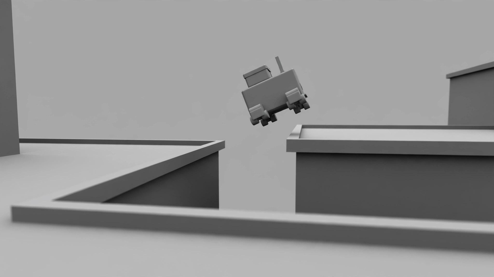

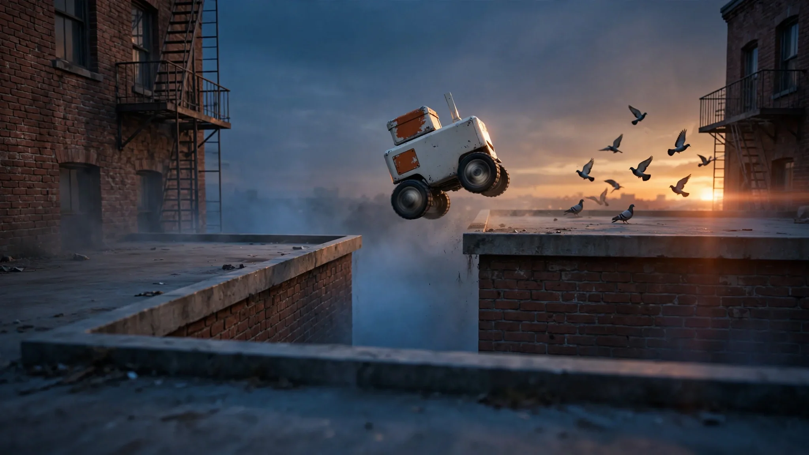
Inputs and run details
Action idea
A boxy courier robot with stubby wheel-legs leaps a narrow rooftop gap between two brick buildings at dusk. Low tracking camera from the near rooftop; the robot pushes off the ledge, sails across the alley, and lands on the far roof with a soft crouch.
Open workflow ↗How it worksDownload workflowOriginal sampled graph
Write a story, get a shot
A cream paper fox folds a yellow boat on a rainy windowsill, launches it into a curb puddle, and watches under a leaf umbrella as it drifts past a red bicycle. GLM 5.3 Flash keeps the prose free of shot-list jargon; MiniMax H3 invents the framing. Flaws: the umbrella is a green leaf, and the blue mailbox reads as a blue door/box. Checked frames are SFW.
Inputs and run details
Story
A small cream-colored paper fox with ink-dot eyes folds a yellow paper boat on a rainy windowsill. When the rain softens, the fox carries the boat downstairs, sets it in a puddle by the curb, and gives it one gentle push. The boat drifts past a red bicycle and a blue mailbox as the fox watches from under a leaf umbrella.
Story-mode rules
SFW family-friendly short film. Treat the following as a short story to film. Invent your own camera angles, pacing, and staging. Do not add on-screen text, logos, or watermarks. Story:
Inspired by ComfyUI users who feed MiniMax H3 a plain story instead of camera angles (https://x.com/EndFolding79421/status/2109791105671700721). Original media not copied.
Open workflow ↗How it worksDownload workflowOriginal sampled graph
Orbit the character
A cream paper fox with a tiny red scarf stands on a sunny wooden windowsill next to a yellow paper boat. GLM 5.3 Flash writes one Muse still prompt; Muse paints the 1:1 still; MiniMax H3 Max Multi Angle (orbit-right 90°, 480p, 5 s) turns the camera around the same subject so you see new sides without rewriting identity. Flaws: the orbit ends closer to a side/three-quarter view than a hard back shot, the yellow boat drifts a little relative to the fox, the scarf sometimes reads as a bow, and the background invents a deeper room as the camera moves. Checked frames are SFW. Inspired by ComfyUI multi-angle character workflows shared via @ai_hakase_ (https://x.com/ai_hakase_/status/2110356121911283849); no media from that post is used.

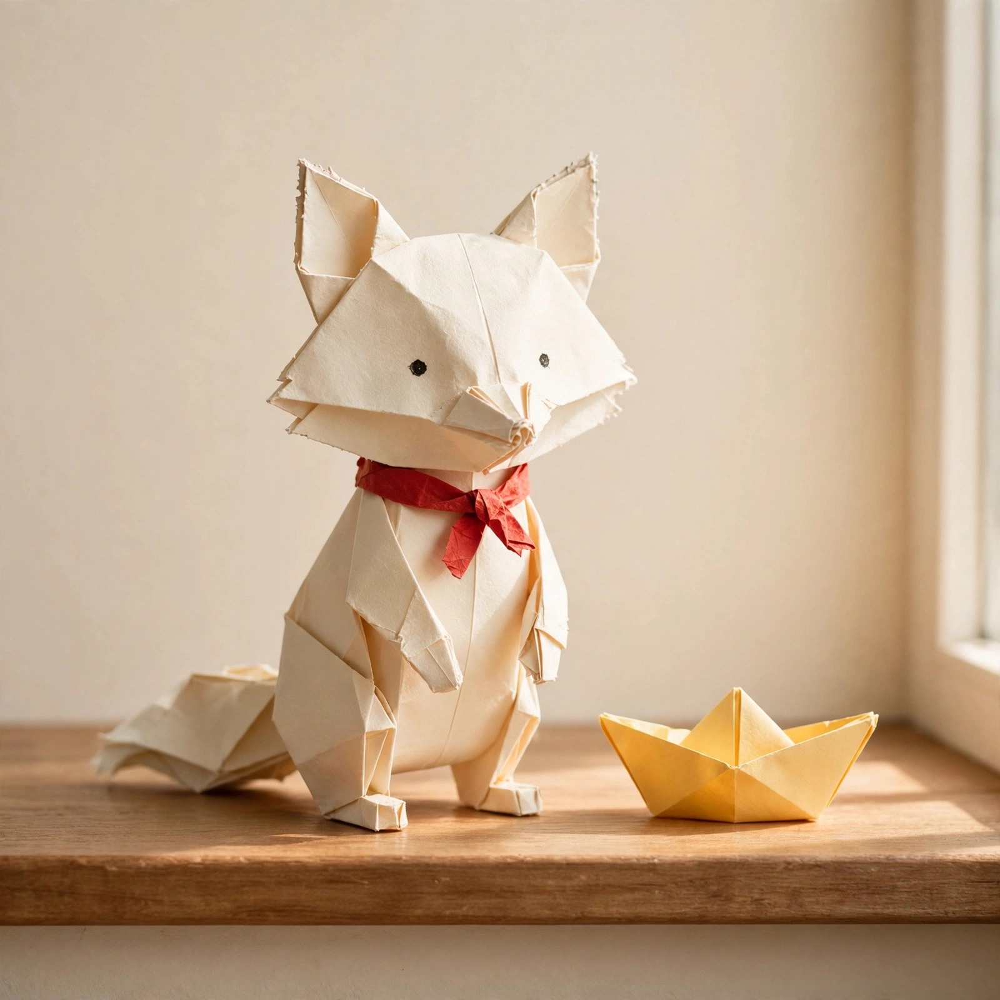
Inputs and run details
Character seed
A cream paper fox with ink-dot eyes, tiny red scarf, standing on a sunny wooden windowsill next to a yellow paper boat, soft daylight, full body, three-quarter front view, plain cream wall behind.
Still rules
Write ONE still-image prompt for Muse text-to-image from the character seed above. Preserve the exact design and props; full body with margin; fixed three-quarter or front camera; soft natural light; NO motion words, NO camera moves, NO animate, NO multiple frames; family-friendly SFW paper craft only; no text overlays; ≤120 words; output ONLY the prompt text.
Inspired by ComfyUI "Múltiplos ângulos de personagens" / multi-angle character workflows (https://x.com/ai_hakase_/status/2110356121911283849). Original media not copied.
Open workflow ↗How it worksDownload workflowOriginal sampled graph
Same shot, three looks
A glass birdcage packed with books and a warm lantern sits on wet rocks in misty teal water under a crescent moon. Muse paints the glass look; Muse Edit restyles it to watercolor, then to photoreal fantasy, keeping the same framing. Seedance 1.5 Pro (720p, 5 s, silent) adds ambient motion on the glass still — in this run it invented golden sparkles instead of a clean material morph, so the three stills are the real ladder. Muse also read the lighthouse prompt as a glass birdcage/gazebo; the ladder still holds. Checked frames are SFW (no people). Inspired by ComfyUI style-morph / material-ladder clips such as @eikoung (https://x.com/eikoung/status/2110576332908433628); no media from that post is used.

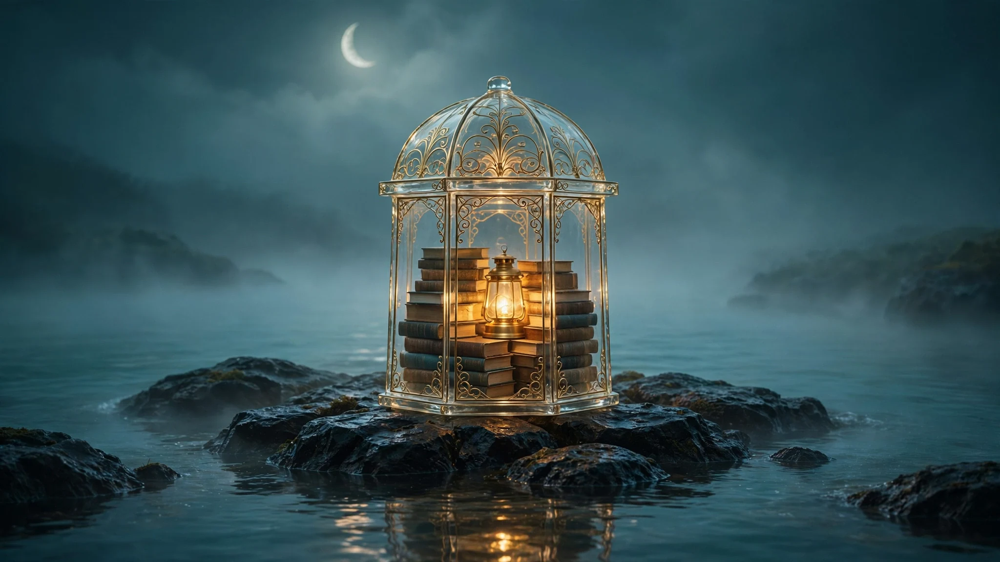

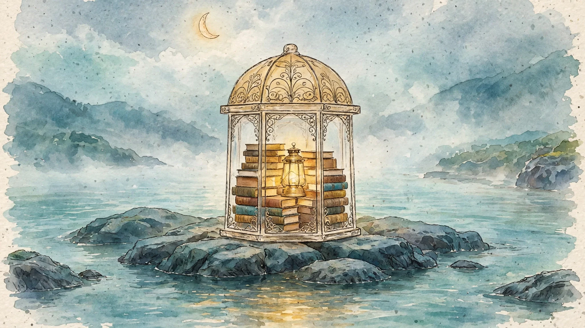

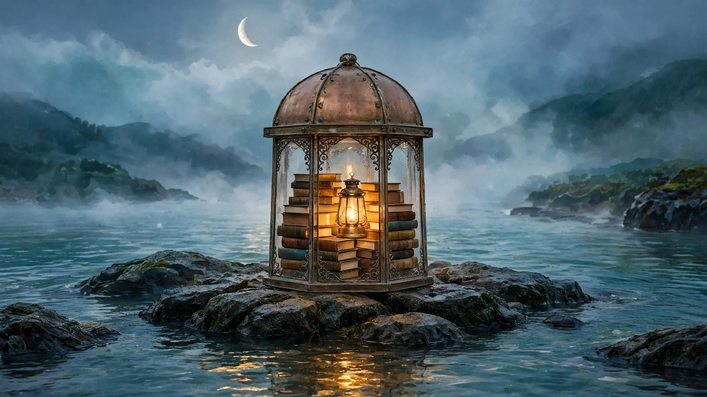
Inputs and run details
Glass look prompt
A small translucent glass lighthouse filled with stacked books and a warm golden lantern, standing on wet black rocks in misty teal water under a pale crescent moon, clear glass walls with soft gold filigree, reflections on the water, fixed wide eye-level camera, centered composition, soft cinematic lighting, no people, no text, family-friendly SFW.
Watercolor edit
Restyle this exact scene as a soft hand-drawn watercolor illustration on textured paper. Keep the same lighthouse shape, book stacks, lantern, rocks, moon, and camera framing. Flat gentle washes, visible paper grain, ink outlines, muted teal and warm gold. No photoreal glass, no 3D render look, no people, no text overlays, SFW.
Photoreal edit
Restyle this exact scene as a photoreal cinematic fantasy photograph. Keep the same lighthouse silhouette, books, lantern glow, wet rocks, crescent moon, and locked camera framing. Real materials: weathered stone lighthouse, warm practical lantern light, misty teal sea, sharp detail. No cartoon, no watercolor paper, no people, no text overlays, SFW.
Morph motion
Locked camera. The lighthouse materials slowly morph from clear translucent glass and gold filigree into soft watercolor paper illustration, then settle. Same composition the whole time. Gentle mist only. No camera move, no new objects, no people, no text, SFW.
Open workflow ↗How it worksDownload workflowOriginal sampled graph
Mix the references
Four Muse stills stand in for your own uploads: a paper-craft fox (image 1), a yellow knitted raincoat (image 2), a red paper lantern (image 3) and a paper harbor pier at dusk (image 4). FLUX.3 Klein Edit gets them in port order (image, image2, image3, image4), and the mix instruction names each one by number. In the result the fox wears the same raincoat with its three wooden toggles and holds the one lantern by its bamboo handle while standing on the cardboard pier, with the striped lighthouse behind it. Flaws: the two paper boats from image 4 mostly drop out, the fox's ears poke through the hood, and the coat comes out longer than the flat-lay reference. A first prompt without “exactly one lantern” gave the fox two lanterns, so the instruction now says it outright. Swap any reference Image node for a 📷 Image input to mix your own photos. Checked outputs are SFW (no people). Inspired by the multi-reference workflows ComfyUI showed for Krea 3 and FLUX.3 Klein (https://x.com/ComfyUI/status/2110840667337642330); no media from that post is used.

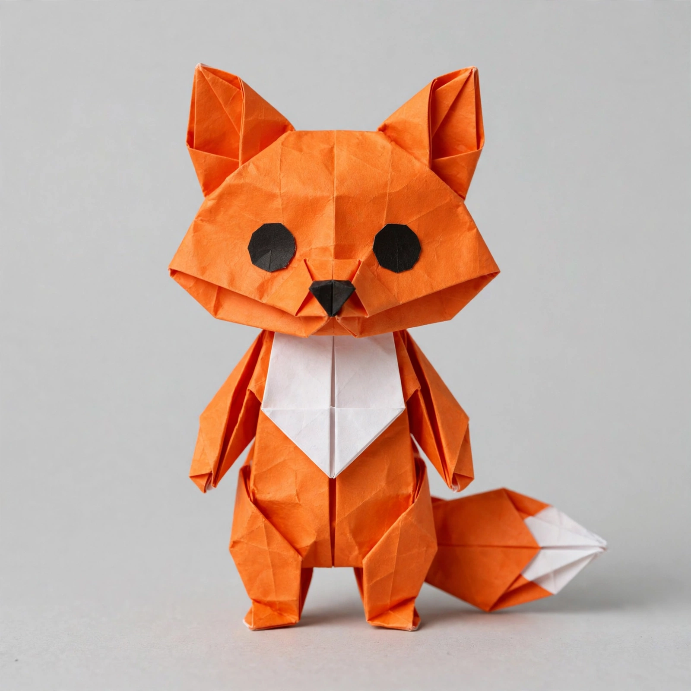

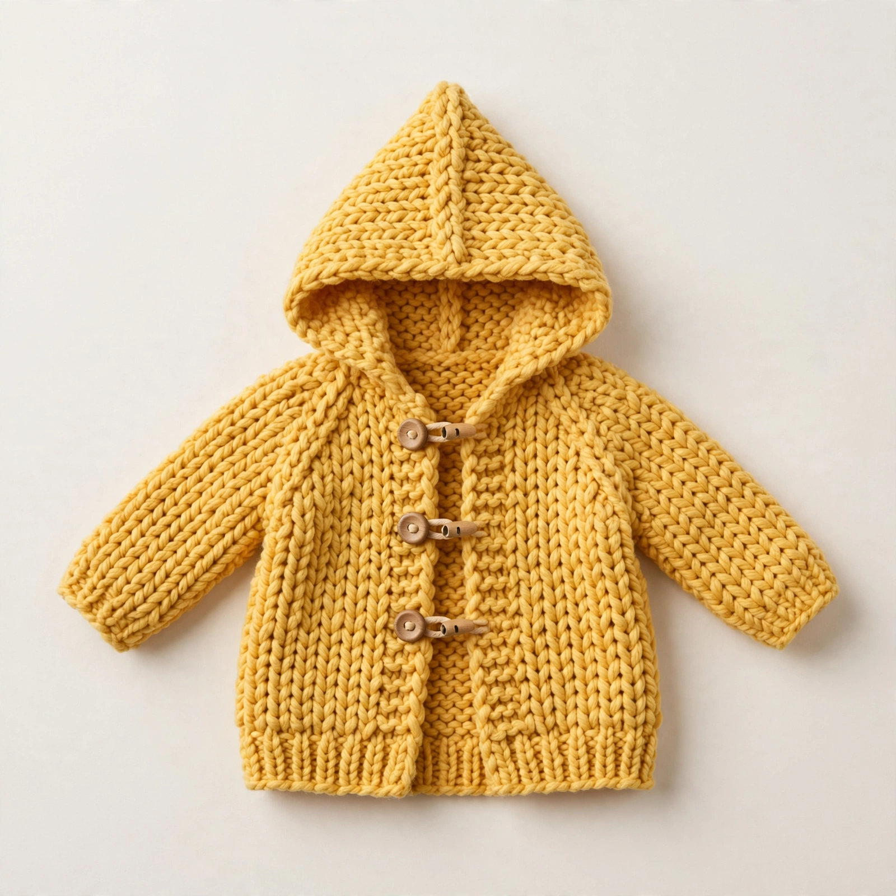

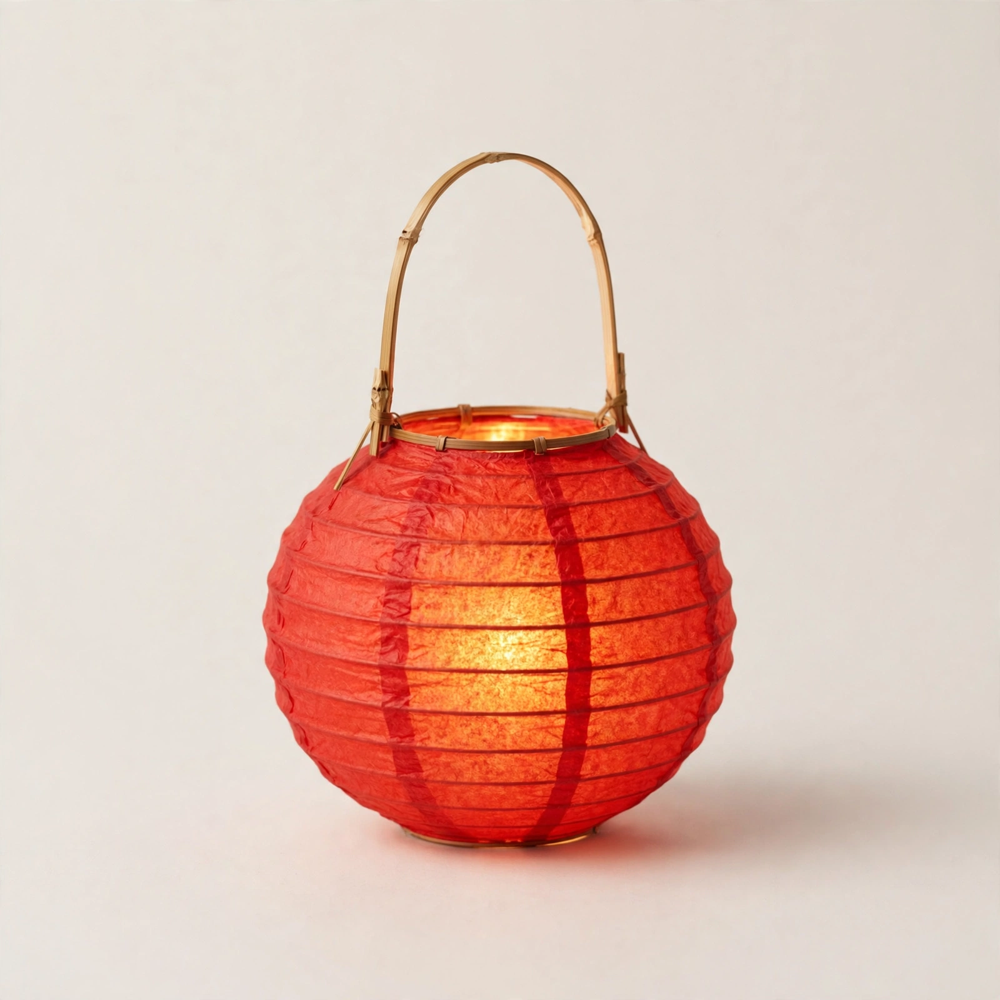

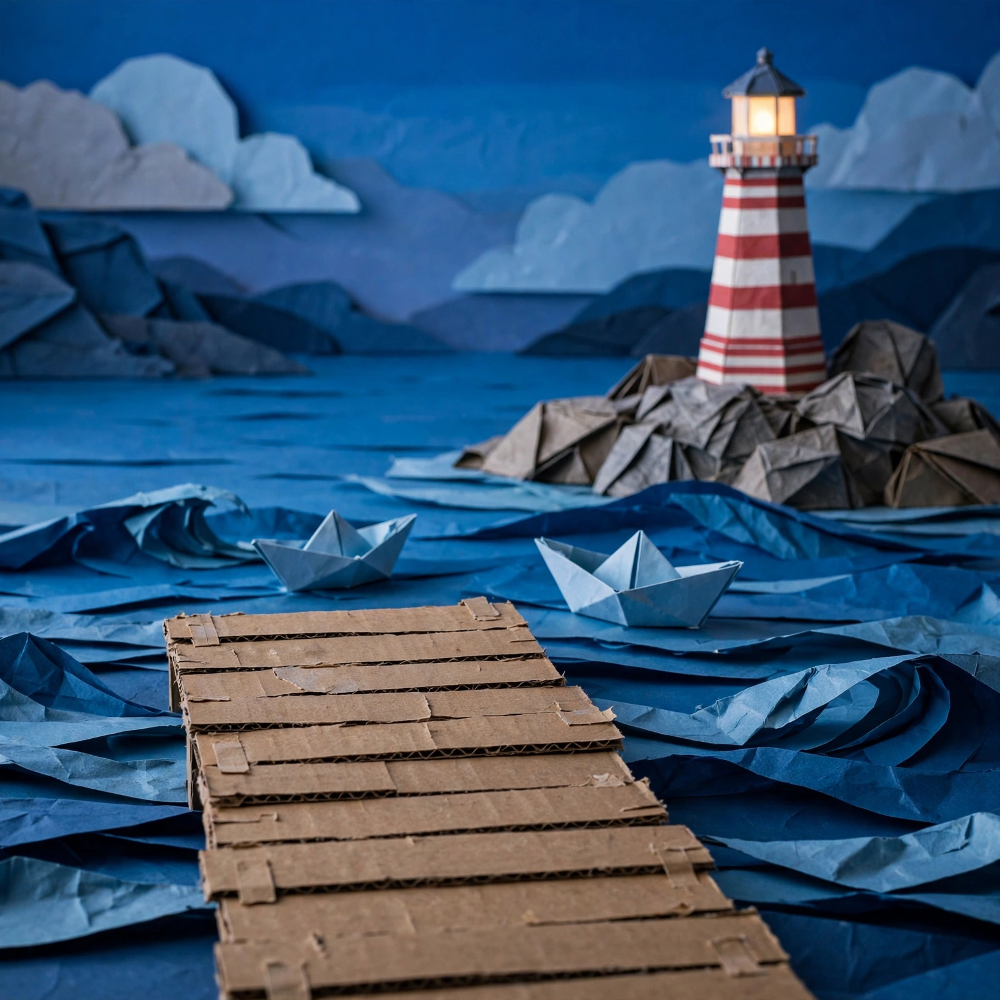

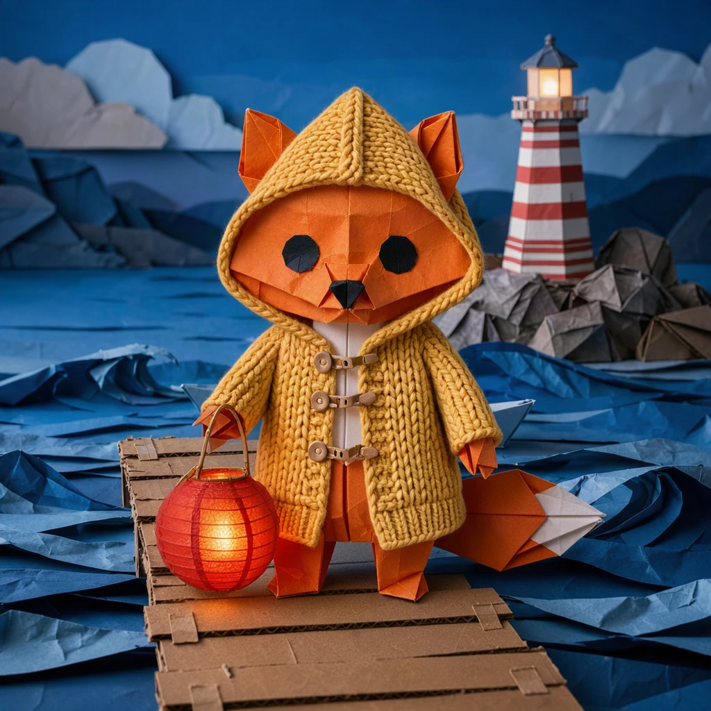
Inputs and run details
Who · character
A small paper-craft fox mascot made of folded orange paper with a white paper chest and tail tip, a black paper nose and two round black eyes, standing upright on its hind legs and facing the camera, full body, centered, plain light grey studio backdrop, soft even light, crisp paper folds, no clothing, no text, family-friendly.
What they wear · outfit
Product photo of a tiny yellow knitted raincoat with a pointed hood and three round wooden toggle buttons down the front, laid flat and centered on a plain off-white background, soft even studio light, visible chunky knit texture, empty garment with no wearer, no mannequin, no text.
What they hold · prop
Product photo of a small round red paper lantern with a thin bamboo carrying handle, glowing warm from inside, centered on a plain off-white background, soft studio light, no text, no people.
Where · place
A paper-craft harbor at blue-hour dusk: a short wooden pier made of cardboard planks in the foreground, layered blue paper waves, two small folded paper boats, and a striped paper lighthouse on a rock in the background with its light on, wide eye-level view, empty pier with no characters, no text.
Mix instruction (names each image)
Make one new picture that combines the four reference images. Image 1 is the character: keep this exact paper-craft fox, same folded orange paper, white chest, black nose and eyes, same proportions. Image 2 is the outfit: dress the fox in this exact yellow knitted raincoat, with the same pointed hood up and the same three wooden toggles. Image 3 is the prop: the fox holds exactly one of this red paper lantern by its bamboo handle in its right paw, glowing warm; its left paw is empty. Only one lantern in the whole picture. Image 4 is the place: the fox stands full body on this exact cardboard pier at blue-hour dusk, with the same paper waves, paper boats and striped lighthouse behind it. Everything stays paper-craft. The lantern casts warm light on the raincoat. One fox only, no other characters, no text.
Open workflow ↗How it worksDownload workflowOriginal sampled graph
Color art to a printed manga panel
Muse paints a color anime-style panel: a cartoon fox in a yellow raincoat carries a red paper lantern down a rainy old-town street at night, with a cat asleep on a windowsill, laundry overhead and a small bridge behind. Qwen Image 2.1 Edit redraws it in one pass as a black-and-white manga panel. The composition, pose and every background element stay in place. Outlines come back as crisp ink, the night sky and shadows become solid blacks and dense dots, walls and cobblestones get screentone, and the lantern glow stays white paper. Flaws: the tones are dots the model drew, scattered rather than a true 45° halftone grid, so this is not the mechanical tone pass the ComfyUI-MangaScreen node does. The yellow coat and orange fur both go nearly white, so the fox loses its color contrast and reads a little like a cat. The panel comes back at 896×1184, smaller than the 1344×1792 color art. Swap the Muse node for a 📷 Image input to convert your own picture. Both outputs were checked and are SFW (a cartoon animal, no people). Inspired by the ComfyUI-MangaScreen node by @renrenrenz5cq (https://x.com/renrenrenz5cq/status/2110357826745098659) and @studiomasakaki's Qwen + MangaScreen recipe (https://x.com/studiomasakaki/status/2111473583835004974). No media from those posts is used.

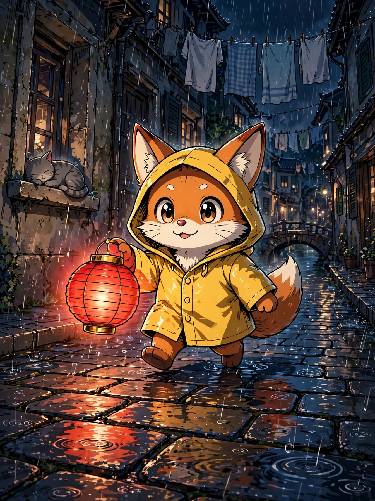

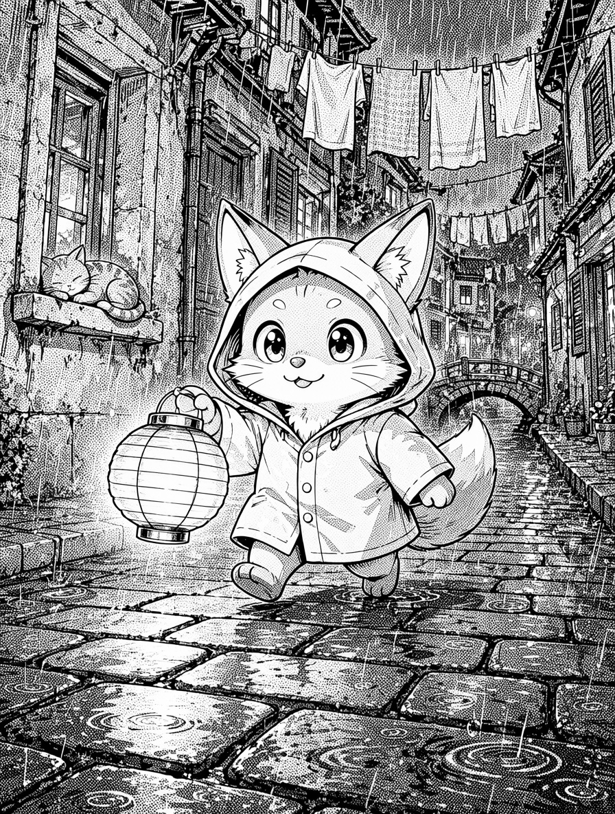
Inputs and run details
Color art · prompt
A full-color anime-style comic illustration with clean cel shading and bold outlines: a small cartoon fox with orange fur and a white chest, wearing a yellow raincoat with the hood up, holds a glowing red paper lantern and walks along a narrow rainy old-town street at night. Wet cobblestones reflect warm lantern light, a cat sleeps on a windowsill, laundry hangs on a line overhead, a tiny bridge over a canal in the background, falling rain streaks. Strong light and shadow, dramatic low camera angle, full body, family-friendly, no text, no signs with letters, no speech bubbles.
Manga conversion · instruction
Redraw image 1 as a printed black-and-white manga panel. Keep the exact composition, camera angle, character pose and every background element in the same place. Ink: clean black line art with varied line weight, crisp outlines. Blacks: the darkest areas become solid black ink fills. Tones: every mid-tone becomes screentone, a pattern of round halftone dots; darker areas get bigger, denser dots and lighter areas get smaller, sparser dots. Highlights: the lantern glow and its reflections stay clean white paper. Rain: thin straight ink strokes. Pure black and white only: no color, no smooth grey gradients, no added text, no speech bubbles, no sound effects.
Open workflow ↗How it worksDownload workflowOriginal sampled graph
Day to night between two keyframes
Muse paints a paper-craft seaside village at midday: six card houses, a striped lighthouse, two folded paper boats and a paper sun. Muse Edit repaints the same shot at night, with lit windows, the lighthouse lamp on, a paper crescent moon and stars. MiniMax H3 Max gets the day still on its image port and the night still on its end-frame port. Across 5 seconds the camera holds still while the sun sinks behind the trees, the sky goes from blue through orange and pink to navy, the windows light up and the lighthouse switches on. The clip ends on the night keyframe. It is the gallery's first start + end frame example. Flaws: the night keyframe turned the layered paper waves into glossy real-looking water, so the water changes material during the clip. The moon and stars appear only in the last second instead of fading in, and the lighthouse gives a soft glow, not a sweeping beam. The 480p setting was dropped by the headless runner (it sends resolution only when it has the model catalog), so the clip rendered at H3 Max's default 768p for $0.40. The saved graph says 768p to match. H3 Max also added a faint ambient sound bed. Swap either keyframe for a 📷 Image input to morph between your own before and after. Every keyframe and sampled video frame was checked and is SFW (paper scenery, no people). Inspired by @Audrius1454663's open-source rebuild of Higgsfield's VFX presets, Day→Night among them, on the Comfy Developer Platform (https://x.com/Audrius1454663/status/2111177673842012349). No media from that post is used.

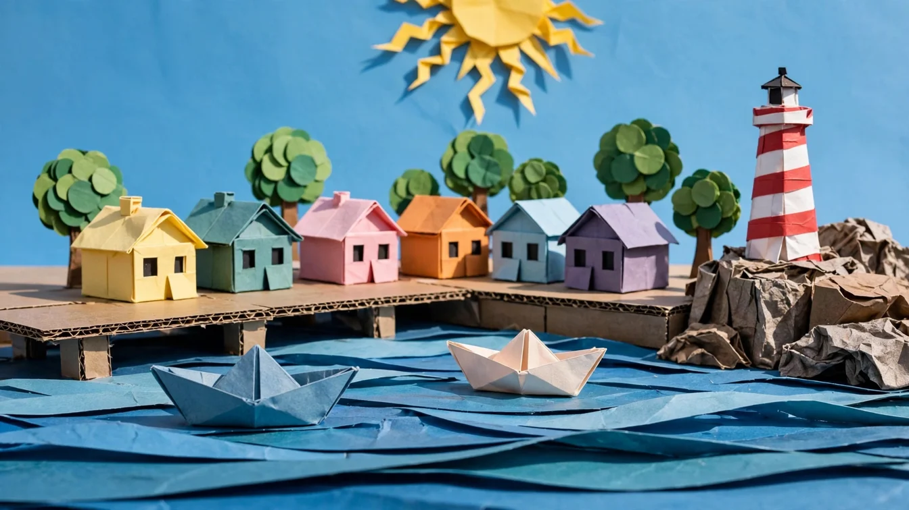

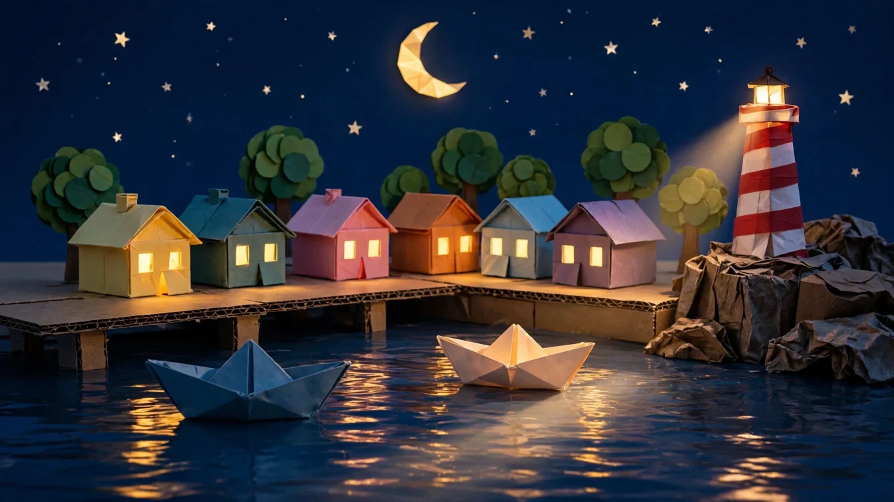
Inputs and run details
Day keyframe · prompt
A handmade paper-craft miniature seaside village at bright midday, wide eye-level view from across the little harbor: six small houses made of folded colored card with dark empty windows, a red-and-white striped paper lighthouse on the rocks at the right with its lamp off, two folded paper boats on layered blue paper waves, a cardboard pier, round paper trees, a paper sun high in a clear blue sky. Crisp paper folds and visible card texture, soft tabletop-diorama light with short shadows, no people, no animals, no text.
Night keyframe · instruction
Repaint this exact scene at night. Keep the same camera, framing and every house, tree, boat, pier and the lighthouse in exactly the same place and shape, still made of paper and card. Change only the light: a deep navy night sky with small paper stars and a paper crescent moon in place of the sun, warm yellow light glowing in every house window, the lighthouse lamp switched on with a soft beam across the water, warm reflections on the paper waves. No people, no animals, no text.
Transition · motion prompt
Locked-off camera, a smooth tabletop timelapse from midday to night. The paper sun sinks behind the village, shadows stretch long across the card, the sky warms to orange and pink and then deepens to navy blue, the house windows light up one by one, the lighthouse lamp switches on and its beam sweeps over the water, the paper stars appear. The camera never moves and nothing new enters the scene. No people, no text.
Open workflow ↗How it worksDownload workflowOriginal sampled graph
Event details to a bilingual poster
GLM 5.3 Flash turns three lines of event details into a poster brief with every line to print in quotes: 秋茶会, Autumn Tea Festival, 10月24日–26日 10:00–18:00 / Oct 24–26, 10am–6pm, and 免费品茗 / Free Tastings. MOSS Image letters all of it at 1024×1536 with a negative prompt, character for character and where the brief puts it, with no extra words, over a line-art teapot and cup on textured paper. Flaws: the illustration is pale next to the lettering, the brief chose 秋茶会 rather than a longer headline, and MOSS is not fast (this run took about half a minute; test images took 19 to 78 seconds against 13 to 19 for Nano Banana 2.1). In side-by-side tests MOSS kept a two-column bilingual menu layout that Nano Banana 2.1, FLUX.3 and GPT Image 2 each rearranged. The poster was checked and is SFW (no people).
Vertical poster. Top headline: "秋茶会" then directly under it "Autumn Tea Festival". Directly under that: "10月24日–26日 10:00–18:00 / Oct 24–26, 10am–6pm". Bottom: "免费品茗 / Free Tastings". Central illustration: a simple ceramic teapot and cup with steam rising, a few maple leaves drifting beside them, drawn in thin elegant line art. Palette: warm terracotta, soft cream, muted persimmon, gentle sage green. Background: textured handmade paper with subtle fiber grain. Clean modern typography, generous margins, balanced vertical composition. No people, no logos, no other text.

Inputs and run details
Event details
A neighborhood tea house's autumn tea festival. October 24 to 26, 10am to 6pm. Free tastings. Warm, calm, a little traditional.
Open workflow ↗How it worksDownload workflowOriginal sampled graph
Product photo to a hero ad
Muse paints a stand-in product packshot: a handmade sage-green speckled ceramic pour-over dripper with a ribbed inside, a thumb tab and a matching saucer, on white. Muse Edit places that exact dripper on a travertine kitchen counter, standing on a glass carafe of coffee next to a kraft bag of beans and a linen towel, in morning window light. The cone, glaze, speckles and tab come through. But the placement also invented a second sage saucer under the carafe, so the product shows up twice. The Inpaint node fixes only that: a brushed mask over the extra saucer, and Nano Banana Edit paints the carafe's glass bottom straight onto the stone. Seedance 1.5 Pro (720p, 5 s, no audio) then does one slow orbit: the camera arcs around the dripper, the bean bag slides behind it, the window drifts past, and it settles closer on the dripper over the carafe. Video → frames keeps that last frame as a hero still. Flaws: the placement turned the saucer into the dripper's base plate and then added the duplicate. Outside the mask the fix is close but not pixel-identical (mean change about 6/255): it also turned the single drip into a thin running stream and came back smaller (1344×768). Around 2 s a coffee drop falls into the dripper from above the frame, because the motion prompt asked for a falling drop and Seedance placed it wrong. The steam is heavier than a real pour-over. A retake with a reworded motion prompt was worse (an invisible pour from above and a smaller orbit), so the first take is the one shown. Swap the packshot Image node for a 📷 Image input to use your own product photo, then re-brush the mask on your scene. Every image and sampled video frame was checked and is SFW (a ceramic product in a kitchen, no people, no logos). Inspired by @Genflickmovies' "one product photo into a hero ad in three nodes" (https://x.com/Genflickmovies/status/2112318819133702620). No media from that post is used.

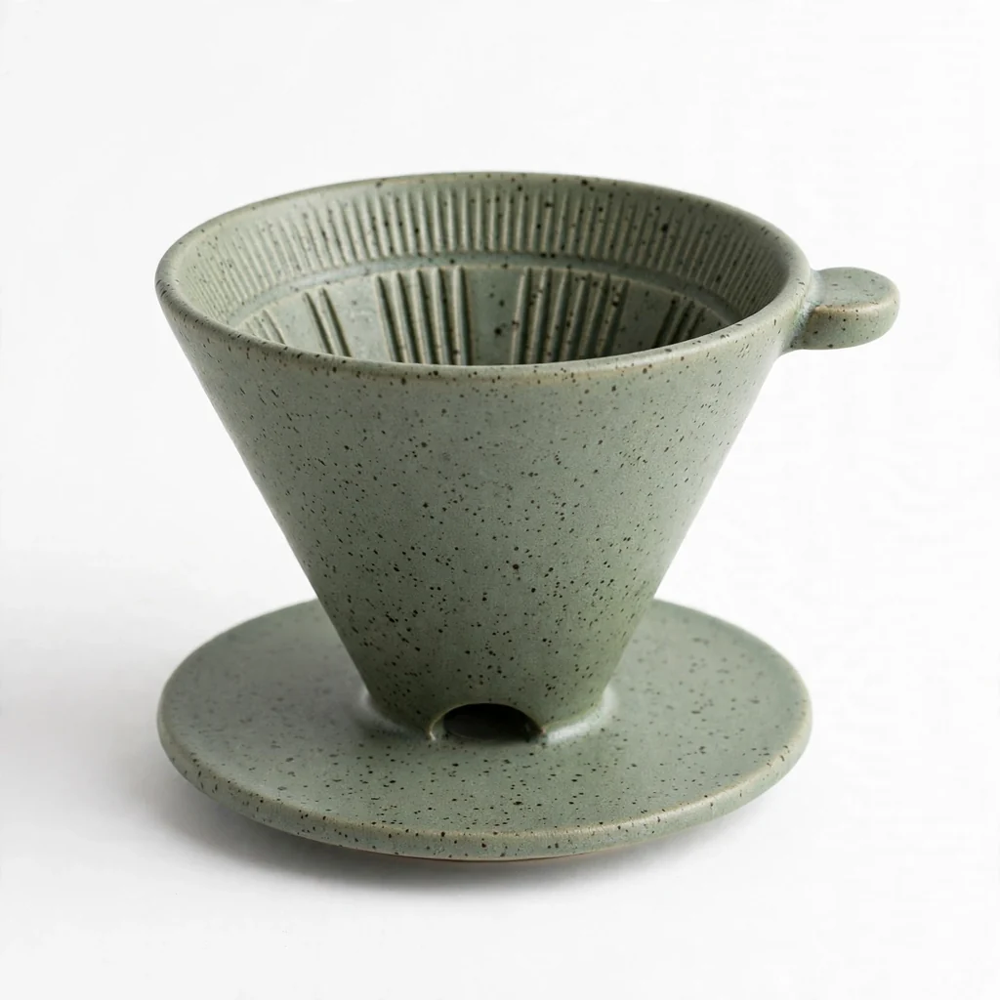


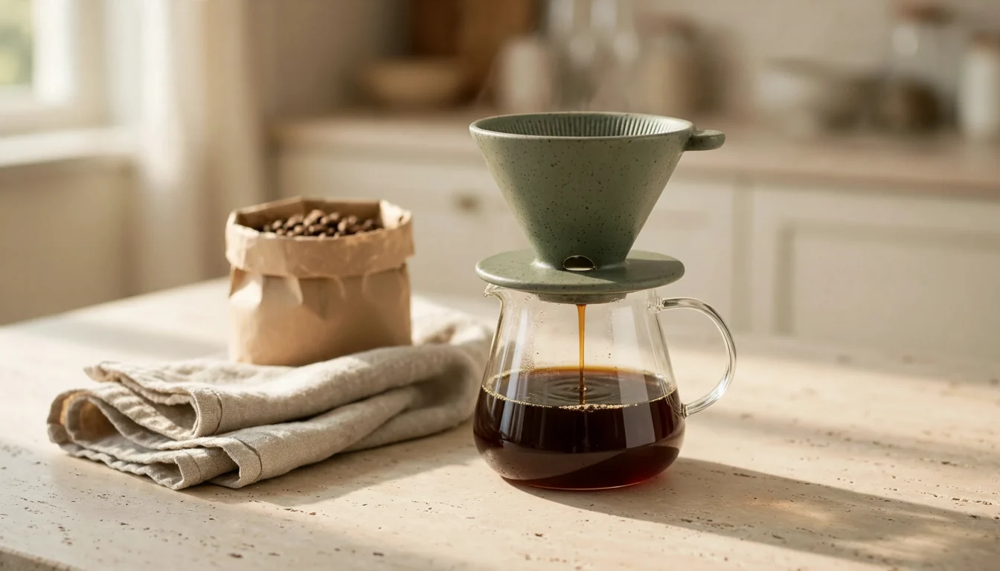

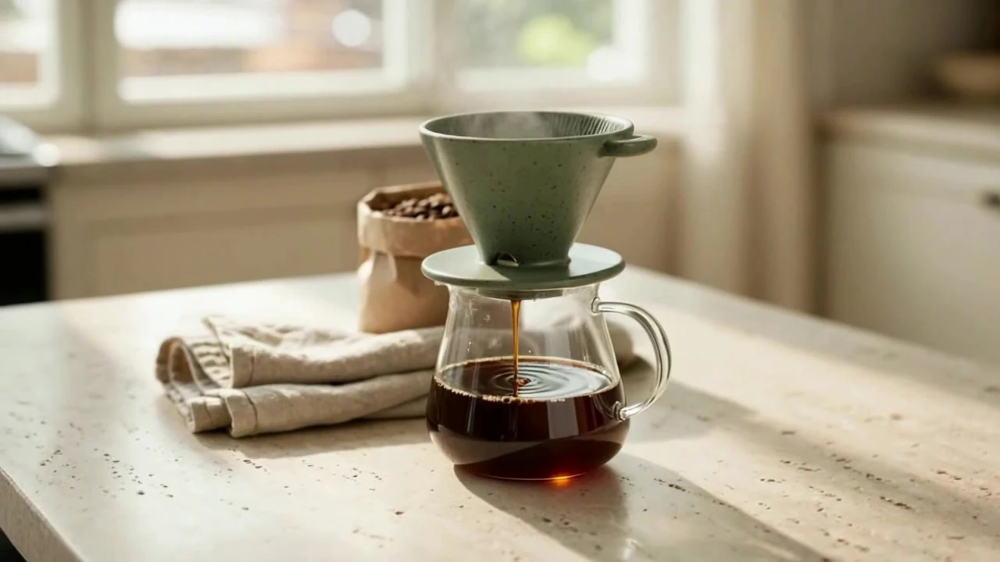
Inputs and run details
Product photo · prompt
Studio product packshot of a handmade ceramic pour-over coffee dripper: a cone-shaped dripper with a matte sage-green glaze, fine dark iron speckles, thin ribbed lines inside the rim, one small rounded thumb tab on the side, sitting on a matching round sage-green saucer. Centered on a plain white seamless background, soft even softbox light, a faint contact shadow, sharp focus, true-to-life color. No text, no logos, no labels, no people, no hands.
Placement · instruction
Place this exact coffee dripper into a lifestyle scene for a hero ad. Keep the product identical: the same cone shape, the same matte sage-green glaze and dark speckles, the same thumb tab and the same saucer, at the same proportions. Stand it slightly right of center on a pale travertine kitchen counter, with a clear glass carafe under it half full of coffee, a folded oatmeal linen towel and a small plain kraft paper bag of whole beans behind it on the left, soft warm morning window light from the left with long gentle shadows, a softly blurred cream-colored kitchen behind. Photographic, calm, premium. No text, no logos, no labels, no people, no hands.
Fix · what goes in the mask
The clear glass carafe's rounded glass bottom resting directly on the pale travertine counter, with a soft natural contact shadow and warm morning light on the stone. No saucer, no plate, no coaster under the carafe.
Hero move · look + motion
Look: a calm premium product commercial, warm morning window light, shallow depth of field, photographic, the same travertine counter and cream kitchen throughout. Motion: one slow, smooth orbit. The camera glides in a gentle 30-degree arc around the ceramic coffee dripper from left to right at counter height, easing slightly closer, and settles on a centered hero frame of the dripper on the glass carafe. A single drop of coffee falls from the dripper into the carafe and a thin wisp of steam rises. Nothing else moves. The dripper keeps its exact cone shape, matte sage-green glaze, dark speckles and thumb tab. No people, no hands, no text.
Open workflow ↗How it worksDownload workflowOriginal sampled graph
Three references, one clip
Muse paints three separate reference stills, all in one needle-felted wool stop-motion look: a little hedgehog mail carrier (brown felted spines, mustard knitted scarf, navy cap, brown satchel), a coral-orange ribbed paper lantern with a wooden handle, and an empty grey stone arch bridge over a blue wool stream in an autumn felt forest at dusk. All three go into one Text→Video node on its ref1, ref2 and ref3 ports, and MiniMax H3 Reference-to-Video (540p, 5 s) films one shot with them: the hedgehog walks onto the left end of the bridge carrying the unlit lantern by its handle while the camera tracks to the right past the felt trees, and at about 3.5 s the lantern lights up with a warm candle glow that he holds up. The character keeps its cap, scarf, satchel and face, the lantern keeps its shape, color and handle, and the bridge, stream and trees match the place still. This is the video version of Mix the references, which only makes a still. Flaws: the model ignored the framing in the prompt. Instead of crossing to the middle of the bridge, the hedgehog stays pinned to the left edge while the camera pans away, so he is cut off by the frame edge in the first half-second and again at the end. The glow lights the ground near him rather than the whole bridge, and the stream drifts out of frame as the camera pans. A retake with a locked-off-camera prompt panned the same way and kept him even smaller, so the first take is the one shown. The clip has its own generated sound (soft footsteps, then a rising tone as the lantern lights; no voice). Swap any Image node for a 📷 Image input to use your own references. Every still and sampled video frame was checked and is SFW (a felt cartoon hedgehog, a lantern and a forest; no people, no logos). Inspired by @ComfyUI's FastH3 OmniRef multi-reference video post (https://x.com/ComfyUI/status/2112645504769413283) and @OrctonAI's reference-character video tests (https://x.com/OrctonAI/status/2112955932216791381). No media from those posts is used.

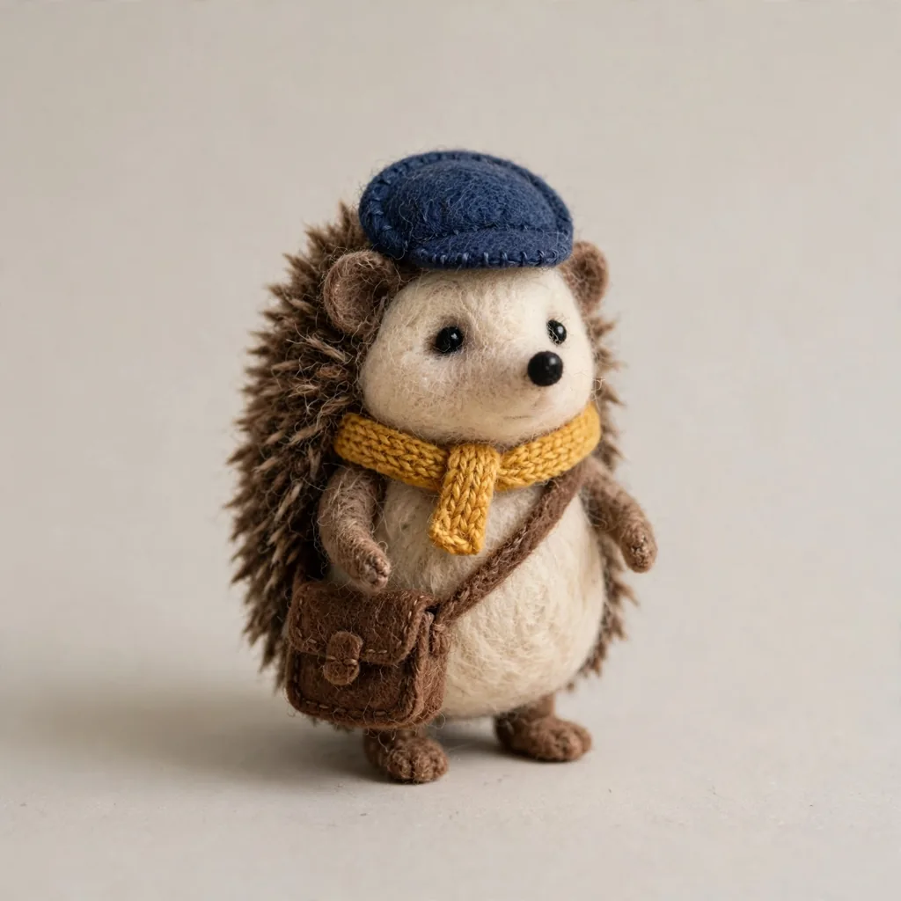

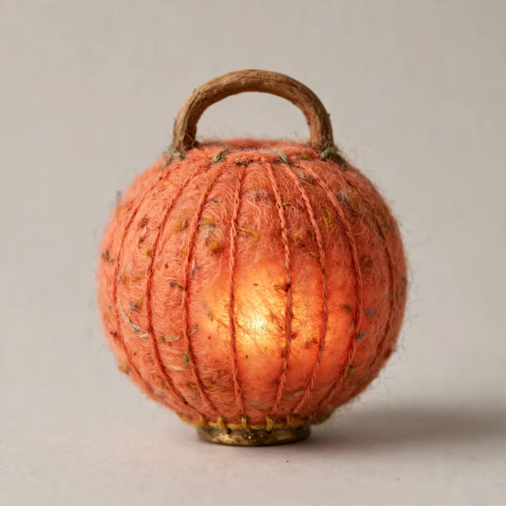

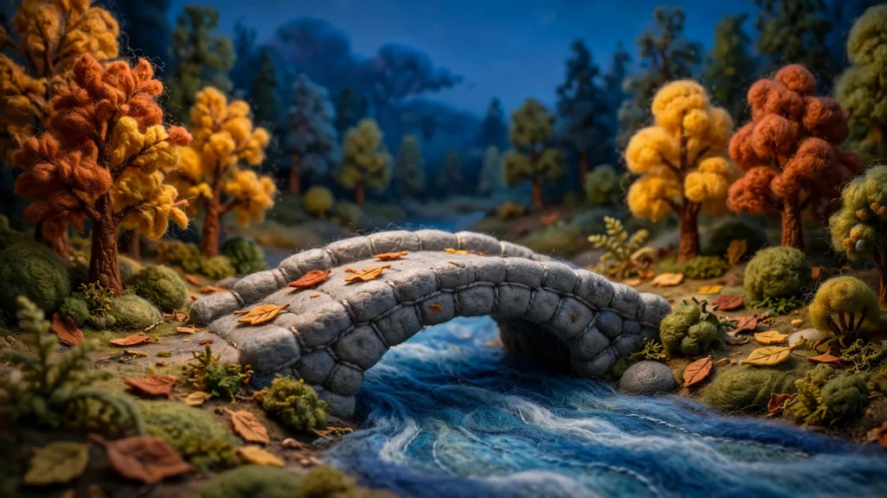
Inputs and run details
Ref 1 · character
Look: a handmade needle-felted wool stop-motion miniature, soft fuzzy wool fibers, tiny visible stitches, warm tabletop studio light, muted autumn palette of rust, mustard and moss green. Character reference sheet: one small needle-felted hedgehog mail carrier standing upright, full body, front three-quarter view, brown felted spines, a cream face with a little black bead nose and bead eyes, a tiny mustard-yellow knitted scarf, a round navy-blue felt cap, a small brown felt satchel across the body. Centered on a plain light warm-grey backdrop, soft shadow, sharp focus. No text, no logos, no people, no hands.
Ref 2 · prop
Look: a handmade needle-felted wool stop-motion miniature, soft fuzzy wool fibers, tiny visible stitches, warm tabletop studio light, muted autumn palette of rust, mustard and moss green. Prop reference: one small round paper lantern in coral-orange with thin vertical ribs, a little curved wooden handle on top and a tiny brass base, glowing softly from a warm candle inside. Centered on a plain light warm-grey backdrop, soft shadow, sharp focus. Just the lantern, nothing else. No text, no logos, no people, no hands.
Ref 3 · place
Look: a handmade needle-felted wool stop-motion miniature, soft fuzzy wool fibers, tiny visible stitches, warm tabletop studio light, muted autumn palette of rust, mustard and moss green. Location reference: a miniature felted autumn forest at dusk, wide eye-level view of a small humpbacked grey stone arch bridge crossing a blue wool stream, rust and mustard felt trees on both banks, a few felt leaves on the bridge, a deep blue dusk sky. The bridge is empty: no characters, no animals, no people, no text.
Shot · look + action
Look: a handmade needle-felted wool stop-motion miniature, soft fuzzy wool fibers, tiny visible stitches, warm tabletop studio light, muted autumn palette of rust, mustard and moss green. One continuous shot, the camera tracks slowly sideways at eye level. The little hedgehog mail carrier from image 1 (brown felted spines, mustard knitted scarf, navy felt cap, brown satchel) walks onto the grey stone arch bridge from image 3, entering from the left, carrying the coral-orange paper lantern from image 2 by its curved wooden handle. In the middle of the bridge it stops, lifts the lantern up high, and the lantern's warm candle glow spreads over the stones, the fallen leaves and the blue wool stream below while the dusk sky deepens. Gentle stop-motion steps. Only this one hedgehog. No people, no hands, no text.
Open workflow ↗How it worksDownload workflowOriginal sampled graph
One still, a seamless loop
Muse paints one 16:9 still in a soft claymation look: a small floating clay island in a peach sky with a cream windmill, a teal waterfall pouring off its edge, mint-green trees and two puffy clouds. That one still is wired into the Image→Video node twice, on its image port (first frame) and on its endframe port (last frame), and MiniMax H3 Max Turbo (768p, 5 s) animates between them. Because the clip has to finish on the picture it began with, it plays back as a loop: the windmill's sails turn, the island rocks a few degrees side to side and bobs, the waterfall sways with it, and the clouds stay put. Measured on every frame, the last frame differs from the first by 1.2/255 on average, about the same as a normal step between two frames (0.9 on average, up to 2.4), and the most the picture ever moves away from the first frame is 7.4/255 around frame 85. The preview below is set to loop. Flaws: the model eases the motion down into the last frames and back up out of the first, so the step across the seam is about four times the tiny steps around it. On close watching there is a faint tick at the loop point, mostly in the sails and the island; at normal viewing it reads as continuous. The motion is gentle, more of a living picture than an action loop. The clip carries a quiet sound track from the model that isn't made to loop, so mute it for the cleanest loop. Swap the Image node for a 📷 Image input to loop your own picture. Every still and sampled video frame was checked and is SFW (clay scenery only; no people, animals, text or logos). Inspired by @PurzBeats sharing looping H3 videos by @_pxlpshr (https://x.com/PurzBeats/status/2113290714066944138). No media from that post is used.

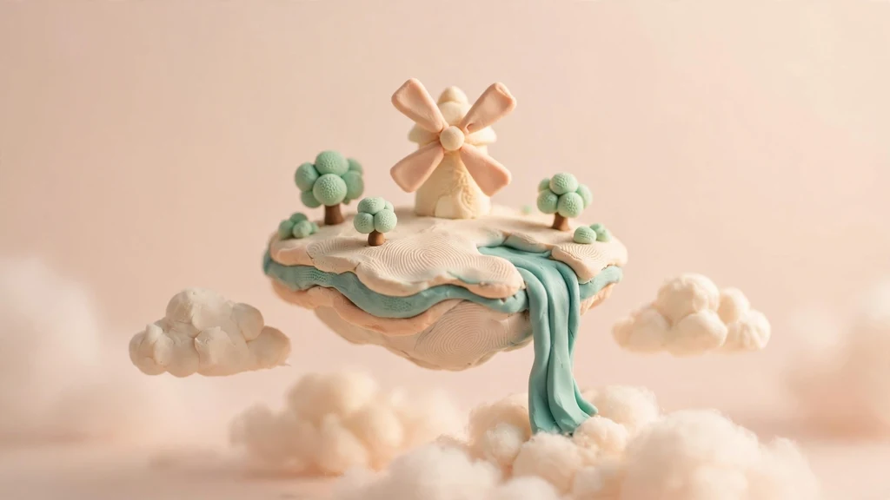
Inputs and run details
Scene · prompt
Look: a soft matte claymation miniature diorama, hand-sculpted plasticine with tiny fingerprint texture, pastel teal, peach and cream palette, gentle warm studio light, shallow depth of field. Scene: a small floating island of clay drifting in a pale peach sky, with a little cream windmill with four peach sails on top, a thin teal waterfall pouring off the island's edge into soft clay clouds below, a few round mint-green trees, and two puffy cream clouds beside it. Wide, centered, calm composition with empty sky around the island. No people, no animals, no text, no logos.
Loop · motion prompt
Look: a soft matte claymation miniature diorama, hand-sculpted plasticine with tiny fingerprint texture, pastel teal, peach and cream palette, gentle warm studio light, shallow depth of field. A seamless loop. Locked-off camera, no zoom, no pan, no cuts. The windmill's four peach sails turn slowly and steadily, the teal clay waterfall keeps flowing over the edge into the clouds, and the floating island bobs gently up and then settles back down. The clay clouds barely drift and return to where they started. Nothing new enters the frame, nothing leaves it, and the last moment is exactly the same picture as the first.
Open workflow ↗How it worksDownload workflowOriginal sampled graph
Add snow to a clip
The first nodes just make a calm source clip: Muse paints a weathered wooden dock on a misty mountain lake at blue hour, with a green rowboat and a lantern glowing on a post, and MiniMax H3 Max Turbo (480p, 5 s) animates it with a slow camera drift, flickering lantern, drifting mist and small ripples. The Video edit node then sends that clip to FLUX.3 Edit Video with one instruction: add snow, keep everything else. The result keeps the plain clip's framing, camera move and timing, and the dock boards, the rowboat's rim, the lantern post's cap and the shore are now covered in a layer of fresh snow while the lantern still glows warm against the cold blue. Compare the two clips side by side. Flaws: no falling snowflakes are visible. The instruction asked for flakes drifting past the camera and for the snow to build up over the shot, but FLUX.3 painted the snow as already settled from the first frame and it stays the same to the end, so this reads as "the same shot on a snowy evening" rather than "snow starts falling". The edit is also a little softer than the source in fine detail (pine needles, dock grain). The edit came back at the source's 832×480, not the 720p the model page mentions. It billed 6 s for the 5.17 s source clip ($0.306), more than the 5 s you might expect. To use your own footage, delete the first three nodes and wire a 📹 Video input into the Video edit node. Every still and sampled video frame was checked and is SFW (a lake, a dock and a boat; no people, animals, text or logos). Inspired by @ComfyUI's LTX for VFX post (https://x.com/ComfyUI/status/2112952361765511440). No media from that post is used.

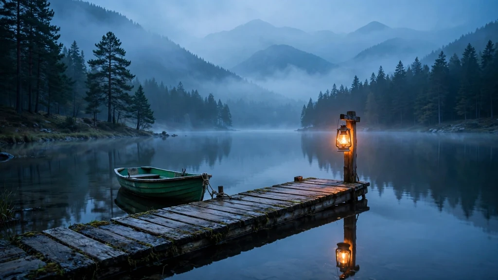
Inputs and run details
Scene · prompt
Look: cinematic photographic realism, 35mm film still, cool blue-hour light with warm practical lamps, soft haze, gentle film grain. Scene: a small weathered wooden dock on a calm mountain lake at blue hour, one empty green rowboat tied to the dock, a single warm lantern glowing on a post at the end of the dock, dark pine trees along the shore and misty mountains behind, the still water reflecting the lantern. Eye-level, wide, quiet and empty. No snow yet, no people, no animals, no text, no logos.
Plain clip · motion prompt
Look: cinematic photographic realism, 35mm film still, cool blue-hour light with warm practical lamps, soft haze, gentle film grain. One calm continuous shot. The camera pushes in very slowly along the dock toward the lantern. The lantern flame flickers softly, thin mist drifts across the lake, and small ripples move around the tied rowboat. Nothing else happens: no people, no animals, no weather change.
Effect · edit instruction
Add steady, gentle falling snow to this whole shot. Large soft snowflakes drift down in front of the camera and over the lake, catching the warm lantern light, and a thin layer of fresh snow gradually settles on the dock boards, the rowboat and the pine branches. Keep the camera move, framing, timing, lighting, lantern, boat and everything else exactly the same.
Open workflow ↗How it worksDownload workflowOriginal sampled graph
Logo to a 3D pile, cut out
FLUX.3 Klein draws a flat two-color logo: a rounded square badge with a navy outline, a tangerine fill and a white paper airplane with two speed lines. Qwen Image 2.1 Edit gets that logo as image 1 and an instruction to make about twenty thick 3D copies, piled up messily, tilted and overlapping, isometric from a high angle, on a plain light grey background. It returns a heap of about two dozen glossy badges that all keep the navy rim, the orange face and the white airplane. Bria's guided background removal is told to keep "the pile of 3D logo badges" and returns a 1024×1024 PNG where the grey background is fully transparent and the pile edges are clean, so it can go straight onto a slide or a banner. Flaws: the Klein logo has slightly soft, uneven edges, the kind you get from a raster model, not true vector. In the pile, every badge lies flat or tilted; none stands on its edge as the instruction asked. The badges are thinner than "thick", and a few airplanes are simplified or mirrored copies of the original. The cutout drops the contact shadows, so the pile floats when placed on a new background. Swap the FLUX.3 Klein node for a 📷 Image input to pile up your own logo. Every image was checked and is SFW (an invented logo shape only; no people, no text, no real brands). Inspired by @Manz's ComfyUI + Qwen Image 2.1 logo-pile workflow (https://x.com/Manz/status/2114301636029882437). No media from that post is used.


Inputs and run details
Logo · prompt
A flat, modern vector logo mark on a plain white background: a rounded square badge with a thick deep-navy outline and a warm tangerine-orange fill, and inside it a simple bold white paper airplane pointing up and to the right, with two short white speed lines behind it. Two flat colors plus white, clean geometric shapes, even line weight, centered with generous margins. No text, no letters, no words, no gradients, no shadows.
Pile · instruction
Turn the logo in image 1 into a physical 3D object and show many copies of it: about twenty thick, solid 3D logo badges with rounded bevelled edges, each one an exact copy of this logo with the same shape, the same colors and the same white paper airplane, piled up in a messy heap. The badges are stacked messily, tilted at different angles, overlapping and leaning on each other, some lying flat and some standing on edge. Isometric view from a high angle. Soft even studio light, gentle contact shadows between the pieces, glossy plastic material. The whole pile is isolated in the center on a plain flat light grey background with nothing else in the scene. No text, no letters, no extra objects.
Keep · what to cut out
the pile of 3D logo badges
Open workflow ↗How it worksDownload workflowOriginal sampled graph
Radio play: two voices, one Speech node
The story idea goes to GLM 5.3 Flash, which writes a 10-line, 126-word radio play as "Tilly: …" / "Rotor: …" lines: Tilly, a calm old baker, talks a jumpy delivery drone on its first morning through getting a three-tier cake up a windy hill to a lighthouse. A gust tilts the top tier, they split the cake into three trips, a gull nearly gets the last one, and the keeper names a cupcake after Rotor. Join puts a fixed cast note in front of the script ("TTS the following conversation between Tilly and Rotor. Tilly has a deep calm older voice (voice Kore); Rotor has a bright young voice (voice Puck). Do not read the speaker names aloud."), and Gemini 3.1 Flash TTS reads it as one 1:09 scene. A diarizing transcription model (Voxtral) splits the recording into two speakers that switch exactly where the script switches, Tilly low (about 108 Hz) and Rotor high (about 253 Hz), and no speaker names are read aloud. Flaws: the delivery is slow for 126 words, with long gaps between lines. Gemini picks its own timbres from the cast note: Tilly comes out as a deep, rather masculine voice, not obviously the Kore voice named in the note. The script repeats one beat ("not a crumb lost" and "not one crumb dropped"). This depends on the cast note's wording: a first take that called it "a lively radio play" came back in one voice and is not used. The model is a preview. Every line was checked against the transcript and is family-friendly. Inspired by @jeffreyabrick's two-voice radio play (https://x.com/jeffreyabrick/status/2113269680702156843). No media from that post is used.
Tilly: Steady, Rotor. One hill, one cake, and noon on the clock. Rotor: Wind gust! The top tier is tilting eleven degrees! Should I panic? Tilly: No panicking. Unstack it. Three tiers, three trips. You're quick as a kettle whistle. Rotor: Recalculating... Three trips. Landing pad: lighthouse porch. ETA: eleven fifty-two. Tilly: Good lad. Mind the gulls. Land soft as butter on warm toast. Rotor: Tier two delivered! Tier one... gull! Shoo! Delivered! Not a crumb lost. Tilly: Then take the candles and yourself up last, slow and proud. Rotor: All tiers assembled! The keeper says it's the finest she's ever seen! Tilly: And you, first flight, first delivery, not one crumb dropped. Rotor: The keeper named a cupcake Rotor's Ration for me. Best morning ever.
Inputs and run details
Story idea
A one-minute radio play. Tilly, a calm old village baker, and Rotor, a jumpy young delivery drone on its very first morning, have to get a three-tier birthday cake up a windy hill to the lighthouse before the party at noon. Rotor is nervous and too literal; Tilly is patient and dry. A small mishap, a clever fix, and a happy landing.
Cast · voice direction
TTS the following conversation between Tilly and Rotor. Tilly has a deep calm older voice (voice Kore); Rotor has a bright young voice (voice Puck). Do not read the speaker names aloud.
Open workflow ↗How it worksDownload workflowOriginal sampled graph
Swap the character, keep the performance
The first nodes just make a performance clip to swap into. Muse paints an invented cartoon street dancer (mustard raincoat, green beanie, jeans, red sneakers) in a pastel cobblestone plaza with a fountain and string lights, and MiniMax H3 Max Turbo (480p, 5 s) animates him: a slow push-in while he steps side to side, throws his arms up, spins once and bows. A second Muse still shows the new character, a plush felt fox with a knitted mustard scarf, on a plain backdrop at the same 16:9. The Video edit node sends the clip and the fox to Wan 2.2 Animate in replace mode. The fox takes over the whole performance: the side steps, the raised arms, the spin and the bow land on the same beats. The plaza, the fountain, the string lights, the camera push-in and the clip's sound all stay as they were. Compare the two clips side by side. Flaws: the fox is not a small plush toy any more. Wan stretches it to the dancer's human height and limb length, so it reads as a person in a fox mascot suit, with long thin legs and black boots. The fluffy tail almost disappears; only a white tip shows briefly from behind. The back view during the spin smears, and the bow ends with the head buried and the paws over the face rather than a clear bow. The result is 832×464 at 30 fps, a little smaller than the 832×480 source. It billed 6 s ($0.30) for the 5.18 s source clip. To use your own footage, delete the dancer nodes and wire a 📹 Video input into the Video edit node; to use your own character, wire a 📷 Image input into its character port. Keep the clip and the character image the same aspect ratio. Every still and sampled video frame was checked and is SFW (invented cartoon characters, fully clothed; no real people, text or logos). Inspired by @ComfyUI's OPENjutsu post (https://x.com/ComfyUI/status/2114843030364795231). No media from that post is used.

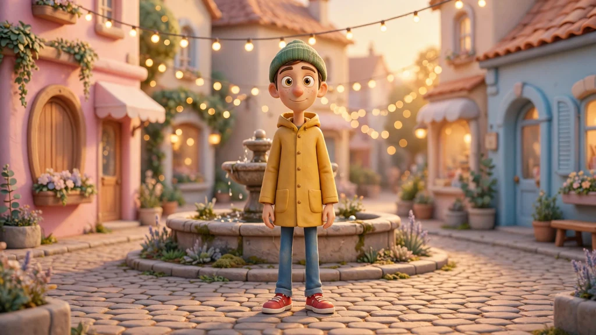

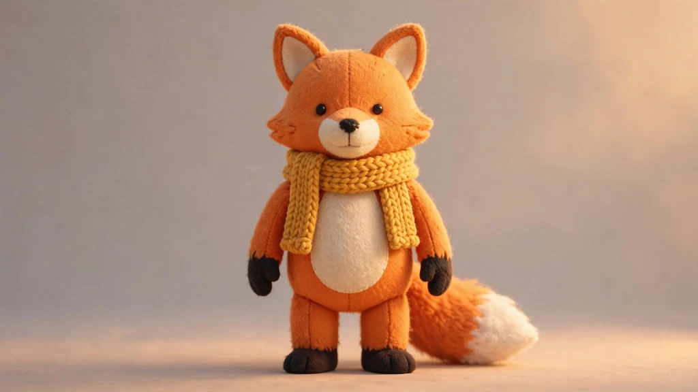
Inputs and run details
Dancer · prompt
Look: stylized 3D animated feature film, soft rounded shapes, matte clay-like materials, warm golden-hour light, pastel colors, gentle depth of field. Scene: a small cobblestone town square at golden hour with a stone fountain, pastel shopfronts and string lights. In the center stands one invented cartoon street dancer, a lanky young man with stylized cartoon proportions, fully clothed in a mustard-yellow raincoat, a green knit beanie, blue jeans and red sneakers. He is seen full body from head to shoes with space around him, facing the camera, arms relaxed at his sides. Wide medium shot at eye level. No text, no logos, no other people.
Performance · motion prompt
Look: stylized 3D animated feature film, soft rounded shapes, matte clay-like materials, warm golden-hour light, pastel colors. One continuous shot with no cuts. The camera slowly pushes in and drifts a little to the left. The street dancer stays full body in frame: he steps side to side, raises both arms high and spins around once, then finishes with a big theatrical bow toward the camera. The fountain sprays softly and the string lights glow. No text, no other people.
New character · prompt
Look: stylized 3D animated feature film, soft rounded shapes, matte clay-like materials, warm golden-hour light, pastel colors, gentle depth of field. One invented character: a plush fox toy brought to life, standing upright on two legs like a person, with soft orange felt fur, a cream belly and muzzle, black felt paws, a fluffy white-tipped tail, small button eyes, and a mustard-yellow knitted scarf. Full body from ears to feet with space around it, facing the camera, arms relaxed at its sides, centered, against a plain soft warm-gray studio backdrop. Wide medium shot at eye level. No text, no logos.
Open workflow ↗How it worksDownload workflowOriginal sampled graph
Carve a design into a pumpkin
Muse draws a flat black stencil: an owl perched on a big crescent moon with three stars. Nano Banana Edit carves that stencil into a pumpkin on a dusk porch with fairy lights behind it. The moon and the owl's eye rings are cut through and glow, the owl's body and the stars are shaved into the skin, and a few chips lie on the step. Muse Edit takes the carving back out to make a clean plate: the same pumpkin, step and framing with whole skin and no chips. MiniMax H3 Max Turbo gets the clean plate on its image port and the carved still on its end-frame port. Across 5 seconds at 480p the camera holds still while glowing lines trace the stars, the moon and the owl. Two cut pieces drop onto the step and the candle inside flickers on, and the clip ends on the carved still. Flaws: no hands or tools appear, so the carving draws itself. The prompt asked for a curly green stem, but both stills have a dark brown one. The clean plate is a slightly wider crop (2048×1152 against the carve's 1344×768), which the clip absorbs. H3 Max Turbo added a faint, wordless sound bed. A first carve with Muse Edit drifted from the stencil (the moon became a grin), so the saved graph uses Nano Banana Edit for that step. The original workflow vectorizes its design first. Here the stencil prompt asks for flat black shapes, so no vectorize step is needed. Swap the stencil node for a 📷 Image input to carve your own drawing. Every still and sampled video frame was checked and is SFW (an invented owl design and a pumpkin, no people). Inspired by @jp_costa's ComfyUI pumpkin-carving workflow (https://x.com/jp_costa/status/2115525910254530758). No media from that post is used.

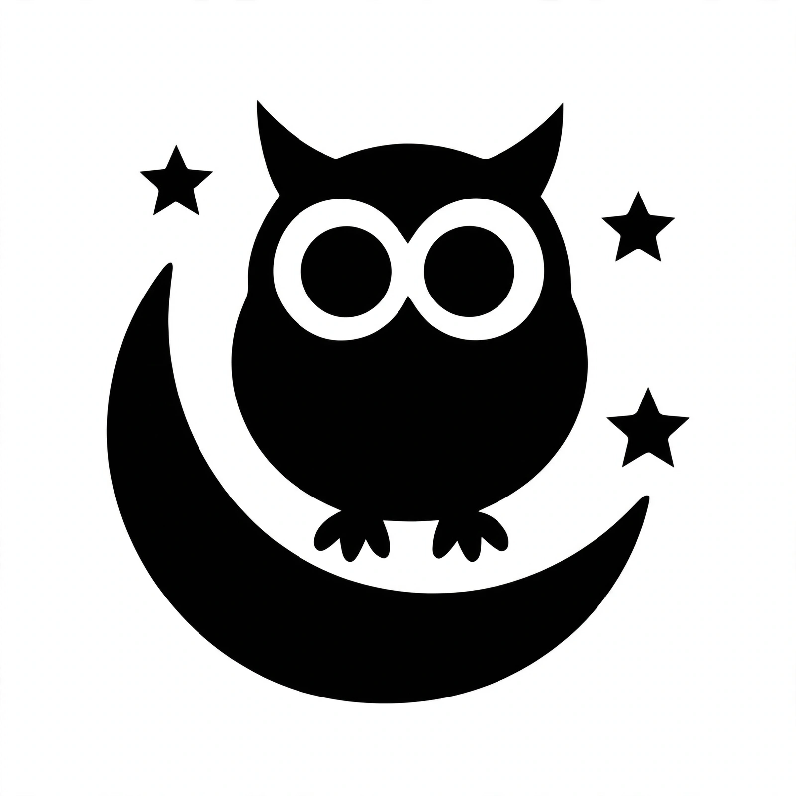


Inputs and run details
Stencil · prompt
A pumpkin-carving stencil: one bold flat design in solid black shapes on a plain white background. An invented round little owl with big round eyes and two pointed ear tufts, perched on a thin crescent moon, with three small five-pointed stars around it. Simple thick shapes with clean edges and wide gaps between them, like a paper cut-out template, no thin lines, no shading, no gradients. Centered with a white margin all around. No text, no letters, no logos.
Carve · instruction
Look: cozy photoreal still life at dusk, one large round orange pumpkin with a curly green stem sitting on a weathered wooden porch step, dark blue evening background with soft out-of-focus fairy lights, shallow depth of field, eye-level close-up, the pumpkin fills the center of the frame. Carve this exact design into the front of the pumpkin as a jack-o'-lantern: every black shape of the design is cut clean through the skin, keeping the same owl, crescent moon and three stars in the same layout. A candle inside glows warm orange-yellow through the cut-out shapes, a few small carved pumpkin chips lie on the step beside it. No hands, no people, no knife, no text, no logos.
Clean plate · instruction
Clean plate: show this exact same photo with the carving undone. Keep the same pumpkin with the same shape, size, ribs, color and curly green stem, in exactly the same place on the same wooden porch step, with the same camera, framing, dark blue dusk background and fairy lights. Change only the front of the pumpkin: its skin is whole, smooth and uncut, with no holes, no design and no glow from inside, lit softly by the dusk and the fairy lights. Remove the pumpkin chips from the step. No hands, no people, no text.
Carving · motion prompt
Look: cozy photoreal still life at dusk, one large round orange pumpkin with a curved stem on a weathered wooden porch step, dark blue evening background with soft out-of-focus fairy lights, shallow depth of field, eye-level close-up. One continuous locked-off shot, the camera never moves. The whole uncarved pumpkin sits still in the dusk. Then thin glowing lines trace an owl, a crescent moon and three stars across its skin as if drawn by an invisible blade. The crescent moon and the owl's eye rings pop out cleanly and the pieces tumble onto the step at the right, while the owl's body and the stars are shaved into the skin. A candle inside flickers on and warm orange light pours out through the cut shapes. No hands, no knife, no people, no text.
Open workflow ↗How it worksDownload workflowOriginal sampled graph
The graph picks the video model for each shot
GLM 5.3 Flash writes a three-shot plan for a paper-lantern goldfish that slips off a night-market stall and swims up to the stars, then one GLM call per shot turns its line into a full video prompt. For each shot a Decide node (Clef, choose mode) answers "which video model should film this?" from four options that are exact model ids, and its answer is wired into that Text→Video node's model field. In the saved run shot 1 went to P-Video 2 Pro (87%), shot 2 to Kandinsky 6 Lite (61%) and shot 3 to MiniMax H3 Max Turbo (94%). A shared look line is joined in front of every shot prompt, Combine stitches the three shots, and one Mureka score plays over the whole 15 s film. Flaws: shot 2 breaks the look. Kandinsky drew a big-eyed cartoon goldfish rather than a paper lantern, and it hovers instead of weaving between lanterns, which is the risk of letting different models draw the same hero. The Decide calls are not itemized, so the total is approximate. The film was re-encoded to 832×480 for the gallery. Every sampled frame was checked and is SFW (a lantern fish over a market street, no people).
Inputs and run details
Story idea
After closing time at an empty night market, a paper-lantern fish slips off its stall, darts between the hanging lanterns, then rises over the rooftops and swims up to join the stars.
Look bible (joined in front of every shot)
Look: a hand-painted gouache storybook at night, deep indigo and teal shadows, warm amber lantern light, soft painted brush texture, 16:9 film framing. The hero is a small red-orange paper-lantern fish with ribbed paper folds, a flowing tissue-paper tail and a warm candle glow inside. No people, no faces, no text, no logos.
The three Text→Video nodes now carry the model each Decide picked in the saved run as a default. The Decide wire still overrides it at run time, so routing works as before.
Open workflow ↗How it worksDownload workflowOriginal sampled graph
Song in, music video out
GLM 5.3 Flash writes a two-line verse and a two-line chorus about a red tin-toy robot watering a rooftop garden at sunrise. MiniMax Music 2.6 sings them as bright synth-pop. FLUX.3 Klein paints the robot on its rooftop stage, and the Avatar node sends that picture and the song to the Music Video Generator, which returns a performance with its own scene changes: the robot dances and mouths along while the vocal plays. Trim caps the song at 15 s before the video model, which bills by audio length, and Soundtrack lays the original full-quality song back over the video. Flaws: MiniMax ignored the 15 s duration and returned a 33 s song with an 8 s instrumental intro, so the 15 s cut keeps only the verse and the chorus is not in the video. Move Trim's start to about 7 s to catch the singing. The video was re-encoded for the gallery. Every still and sampled frame was checked and is SFW (a toy robot, no people).

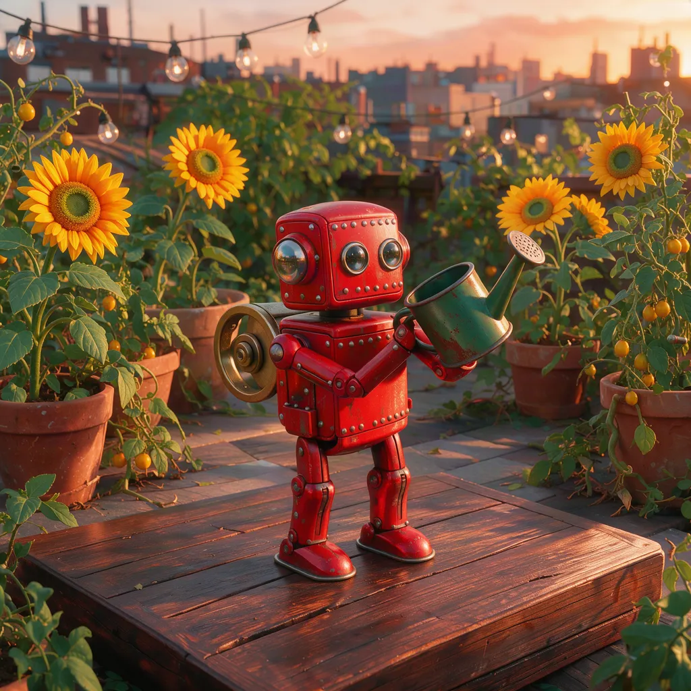
Inputs and run details
Song idea
An upbeat synth-pop song about a little red tin-toy robot who wakes up at sunrise and waters the flowers in a rooftop garden, singing into its watering can.
Performer & stage
A small shiny red wind-up tin-toy robot with a brass wind-up key on its back, round glass eyes and riveted panels, holding a little green watering can like a microphone, standing on a tiny stage in a lush rooftop garden at sunrise, potted sunflowers and tomato vines, string lights, warm golden light, city rooftops behind, colourful stylised 3D animation look, no people, no text.
Open workflow ↗How it worksDownload workflowOriginal sampled graph
A composer that watches your film
MiniMax H3 Max Turbo films 10 silent seconds of a lantern on a still mountain lake at night: a firefly drifts down, the lantern lights, and a wave of lanterns lights and rises across the water. Frames pulls one still per second, and Elorian Glimpse reads them and writes a composer's brief with tempo, key, instruments and cue points ("at 4 s, when the lantern ignites, strings swell"). ElevenLabs Music composes from that brief and Soundtrack lays it on the film. A second branch scores the same film from a text description only, so you can hear what watching adds. All four of Glimpse's cue points land within about half a second of the picture, and the fitted cue tracks the asked 60 BPM. Flaws: ElevenLabs ignored the 10 s duration on the fitted call and returned 19 s, so the fitted version stops at 10 s while still at full level. The hush asked for at 3 s is only a small dip. Glimpse sees 1 fps stills, so it called the firefly a spark. The clips were re-encoded for the gallery. Every sampled frame was checked and is SFW (lanterns on a lake, no people).
60 BPM, D minor to D major, wondrous nocturnal mood; instrumental, no vocals; celesta, harp, strings. 0-1s: dark sustained strings, unlit lantern on still lake. At 1s, when a spark flares overhead, celesta strikes a glissando; 1-3s harp figures follow the flame to the lantern's top. At 3s, hush—silence as flame touches. At 4s, when the lantern ignites, strings swell into a major chord with harp arpeggios. 5-7s: celesta melody grows as lanterns light across the water. 8-10s: full swell as lanterns rise, ending cleanly at 10s.
Inputs and run details
Shot
Night on a perfectly still mountain lake, deep blue darkness, stars reflected in the water. A single small unlit paper lantern floats in the centre. A firefly drifts down and lands on it, and the lantern glows warm orange. Then, one after another in a spreading wave, dozens of paper lanterns across the lake light up, and finally they all lift slowly off the water and rise into the sky. No people. Slow gentle push-in, one continuous shot.
Ask
Score this 10-second clip.
Blind brief (no frames)
An instrumental film score cue, exactly 10 seconds long, no vocals, for this scene: night on a still mountain lake; a firefly lights a paper lantern, a wave of lanterns lights up across the lake, and they all rise into the sky.
Open workflow ↗How it worksDownload workflowOriginal sampled graph
Prompt to an editable SVG sticker
FLUX.3 Klein paints a sticker of a baby dragon holding a paper lantern in a flat style on a white background. Ideogram Vector, in convert mode with a blank prompt, turns that image into an SVG with 122 vector shapes and no embedded raster, so you can zoom to 8× and the edges stay crisp, then edit the shapes in any vector tool. Flaws: the prompt asked for four flat colours, but FLUX added soft shading and a white sticker border, and the vectorizer kept them faithfully, so the SVG has about 25 fills and 5 gradients rather than a minimal palette. The sticker PNG was re-encoded to WebP for the gallery; the SVG is as returned. Inspired by @AllaAisling's Ideogram Vector post (https://x.com/AllaAisling/status/2113305041906061472). No media from that post is used. Every image was checked and is SFW (a cartoon dragon).

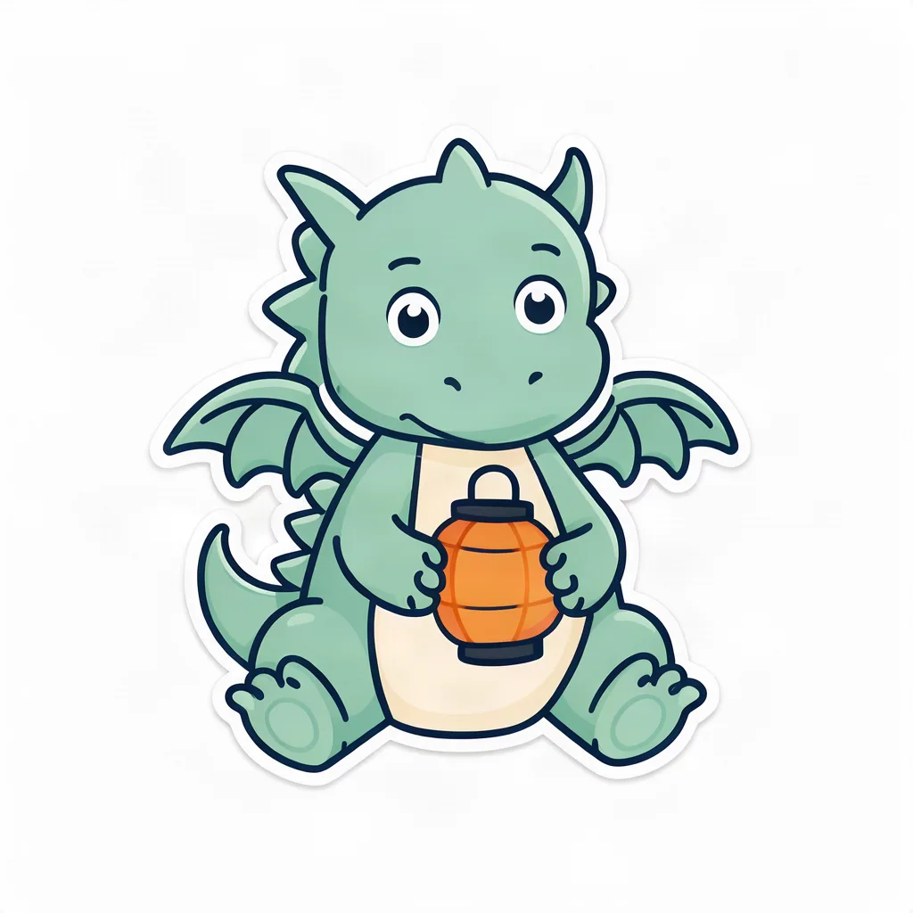

Inputs and run details
Sticker concept
A friendly cartoon baby dragon sticker, sitting and holding a tiny paper lantern. Flat vector illustration style, exactly four flat colours (mint green body, cream belly, warm orange lantern, dark navy outline), thick even navy outline, clearly separated scales on the back, small rounded wings, big friendly eyes. Centered on a plain white background, no gradients, no texture, no text.
Open workflow ↗How it worksDownload workflowOriginal sampled graph